A triangle is enough to begin a renderer. Give the GPU three positions, tell it where the camera is, and ask it to color the pixels inside their projected outline. A game engine becomes difficult when that triangle belongs to a reusable object, the object moves while the previous frame is still rendering, a thousand copies share its geometry, and a shadow or reflection needs to see it from somewhere other than the player's camera. Scene representation is the machinery that keeps all of those descriptions coherent.
We will follow one indoor room from an editable level to the pixels of an image. The room is four meters wide, five meters deep, and three meters high, open toward the camera. Its red and green side walls, pale floor and ceiling, matte block, glossy block, and ceiling area light give us recognizable objects to follow through every representation. The image below is an actual capture of Unreal 5.8.1. Later buffer views and lighting diagnostics use this same geometry and camera.
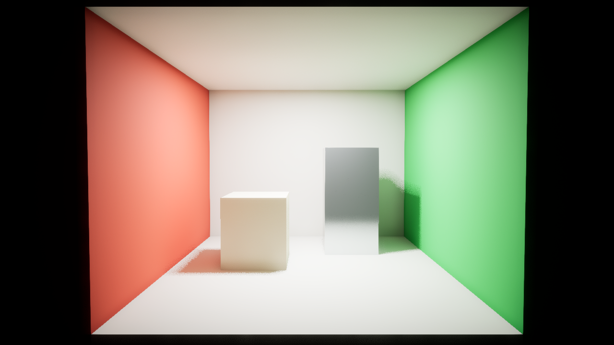
The room grows only when a new question needs another object. First we isolate a small floor patch to understand vertices, indices, transforms, and materials. Then we add an indoor door with an attached indicator, a skeletal mannequin, and three potted plants to expose attachment, deformation, and instancing. Finally, optional fixtures—a cable, a heightfield exhibit, an editable wall panel, a basin, smoke, and a scan of this room—test geometry contracts that ordinary cubes cannot exercise. We return to the seven-piece baseline for controlled material and lighting comparisons.
Keep three evidence labels in mind. Baseline capture means the original seven-component room rendered by Unreal. Extension capture means that room with the door, mannequin, and plants actually added; its inventory records the changes. Worked example means a computed close-up or a proposed fixture in this room. For example, the four-vertex floor patch below explains indexing; it is not a claim that Unreal's built-in cube has only four render vertices. Likewise, the later smoke and groom diagrams specify extensions, not features secretly present in the baseline screenshot.
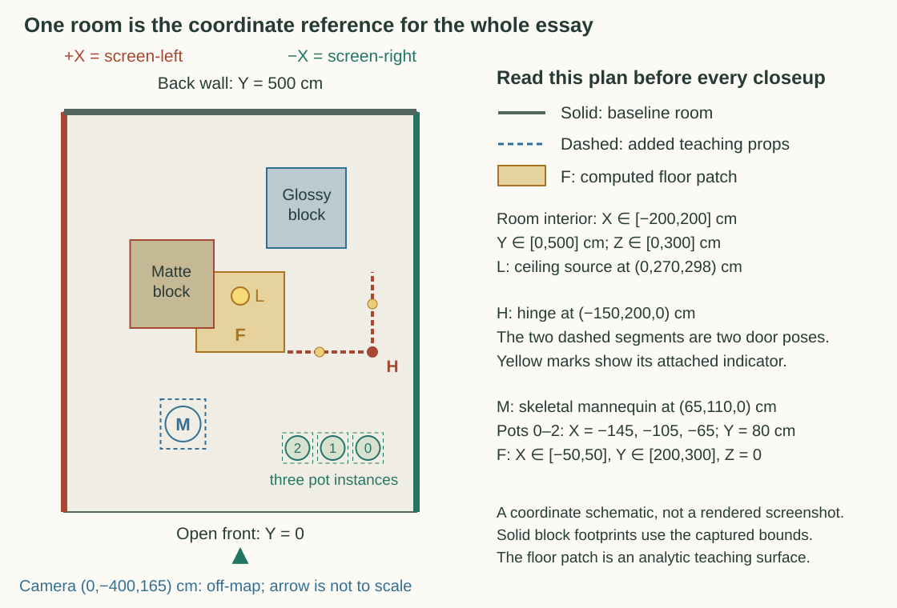
The Unreal names arrive after the problem that makes them useful: an asset when geometry must be shared, a component when an object is placed, a render proxy when threads need independent access, and GPU Scene when shaders must address many placements. We will carry the same object identities through those boundaries. The final Arda design is a proposal derived from these obligations, not a description of existing Arda scene classes.
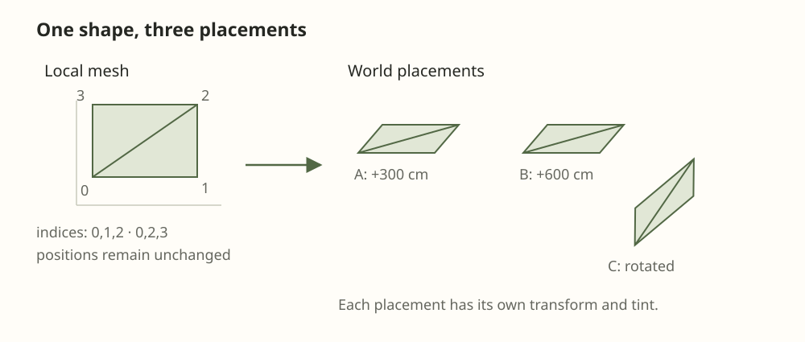
A triangle becomes an object
Isolate a one-meter square patch of the room’s floor as a teaching tile. Imagine that tile lying in its own local coordinate system. Its four corners are (0,0,0), (100,0,0), (100,100,0), and (0,100,0), in Unreal's usual centimeter units. Four positions do not yet say which regions form a surface. We also need connectivity. An index array [0,1,2, 0,2,3] says that the first triangle uses corners zero, one, and two, while the second uses zero, two, and three. The two triangles share two corners. This is an indexed triangle mesh: a vertex array supplies attributes, and an index array chooses which vertex records each triangle uses.
A vertex record usually contains more than position. A surface normal describes an orientation for shading. A tangent supplies a direction along the surface, useful when interpreting a normal map. Texture coordinates, conventionally called UV coordinates, give a two-dimensional address into a texture: (0,0) might mean its lower left corner and (1,1) its upper right, subject to sampling conventions. Colors and other attributes can also be stored per vertex. At a texture seam, two vertices may have the same position but different UVs. They must be separate render vertices even though a modeling tool may present them as one geometric corner.
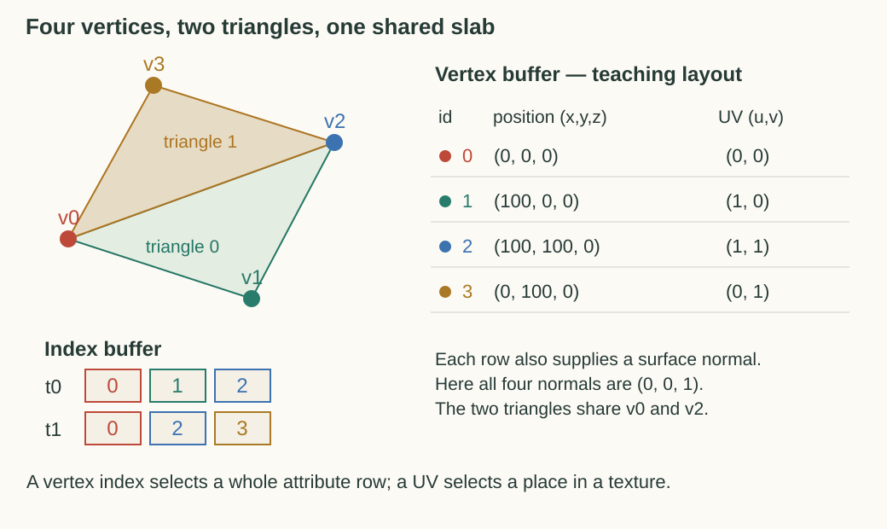
This distinction already explains why an imported model and a GPU buffer are different representations. A modeler may work with polygons, smoothing groups, named surfaces, and convenient shared control points. Rendering needs triangles, the exact attribute combinations at their corners, and compact buffers with a known layout. The engine's asset-building process performs this conversion and may produce several levels of detail. An LOD is a version appropriate to a particular viewing scale; it is not a separate object in the world. The tile can refer to the same asset while the renderer chooses a less detailed version when it occupies fewer pixels.
Unreal's conventional static-mesh representation makes these distinctions concrete. FStaticMeshLODResources owns the render resources for one LOD, including vertex buffers, an index buffer, and sections. A section describes a range of triangles that share a material slot and related rendering flags. FStaticMeshVertexBuffers groups position, general static-mesh vertex attributes, and color buffers. None of these structures says where a particular tile lies in our room. They describe reusable geometry. The relevant declarations are in StaticMeshResources.h.
The tables throughout this article select the information needed to follow the scene. A named field is real Unreal data; a named operation describes information an interface provides. Neither implies that the complete C++ object is uploaded to the GPU. Read each row as a connection between a piece of information and the problem it solves.
The reusable mesh: asset, LOD, attributes and sections
| Information | Concrete Unreal data or operation | Use in the room |
|---|---|---|
FStaticMeshRenderData | LODResources collects the render resources for the asset’s LODs; accessed through UStaticMesh::GetRenderData(). | Both tile placements can use the same built render data. Choosing an LOD does not create a new placed object. |
FStaticMeshLODResources | VertexBuffers, IndexBuffer and Sections; additional resources support particular rendering paths. | One selected LOD supplies the positions and connectivity needed to draw the tile. |
FStaticMeshVertexBuffers | PositionVertexBuffer, StaticMeshVertexBuffer and ColorVertexBuffer separate positions, tangent/UV attributes and vertex colors. | A shader can obtain the tile’s corner position and texture coordinates from the corresponding streams. |
FStaticMeshSection | MaterialIndex, FirstIndex, NumTriangles, vertex-index bounds and section flags such as bCastShadow. | A proposed tile with a ceramic face and brass inset uses two sections while sharing one LOD’s buffers; the captured cube instead uses its own built section layout. |
Source for these selected fields and contracts: StaticMeshResources.h, StaticMeshResources.h, StaticMesh.h.
Now place a floor tile inside the room. Its local lower corner is (0,0,0); translate it by (−50,200,0) cm. Local corner (100,0,0) becomes world corner (50,200,0). The tile occupies a small square of the floor, from X = −50 to 50 and Y = 200 to 300. These are numerical exercise coordinates in the room, not the centered local coordinates of the captured cube asset. For the next projection diagram only, an overhead teaching camera sits at (−100,200,400) and looks along −Z. The ordinary room screenshots retain their original camera near the open front. Changing the observation never rewrites the tile’s shared local vertices.
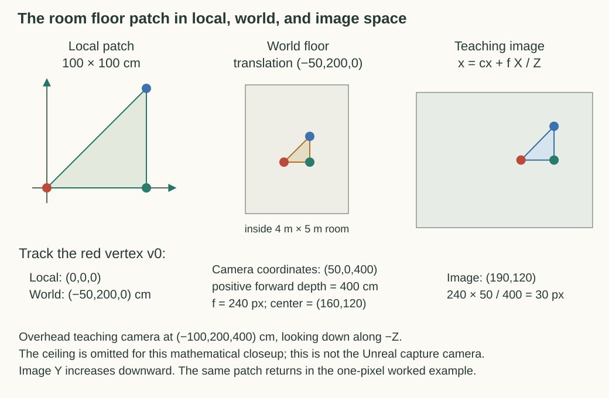
It is tempting to call each copy a mesh, but that word would now hide two different costs. The asset consumes geometry storage and streaming bandwidth. Each placement consumes an identity, a transform, bounds, and whatever parameters distinguish its appearance. A thousand tiles should not require a thousand copies of their vertex arrays. They still require a thousand placements, because the engine must cull them, address them, and potentially move or remove one independently. GPU instancing reduces repeated submission work by drawing compatible placements together; it does not eliminate the underlying distinction.
The first material on our tile can be equally simple: a constant pale color and a roughness value. Roughness controls how broadly the surface reflects a light. Geometry alone cannot provide those values, and a transform cannot provide them either. Our smallest useful scene description therefore has three independent references: geometry, placement, and appearance. A camera supplies a fourth input, because a picture depends on where the scene is observed. A light supplies a fifth, because the surface's response and the illumination reaching it are different facts. These distinctions are conceptually useful even in a renderer consisting of a few hundred lines.
One more piece of data becomes necessary before we can afford a thousand tiles: bounds. A bounding box or sphere encloses the geometry in a form that is cheap to test. If a tile's bounds are outside the camera's view volume, the renderer can skip detailed work. Bounds are a promise that all relevant geometry lies inside. They are deliberately simpler than the mesh. When later chapters introduce animation and displacement, remember that changing the shape can invalidate this promise even when the object origin has not moved.
The world is not one tree
We now need to let a level designer place the room’s objects and attach a small indicator to its indoor door. Unreal organizes gameplay objects with actors and components. An AActor is an object that can belong to a world and participate in gameplay. Components divide its behavior into reusable pieces. A component might render a mesh, play audio, or implement some other service; the word component does not imply visible geometry. Unreal's UObject infrastructure provides reflected types, serialization, editor integration, and managed object references. These are valuable authoring facilities, but they do not prescribe how a GPU should read a million placements.
The component inheritance chain adds responsibilities incrementally. UActorComponent supplies the basic component lifecycle. USceneComponent adds a transform and attachment relationships. UPrimitiveComponent adds the contract for a renderable or collision-bearing primitive, including bounds and scene integration. Here a render primitive means an object registered with the rendering scene; it does not mean one triangle. One such object can contain thousands of triangles or many placements of a shared mesh. A collision-only component can also exist without producing a visible render proxy. UMeshComponent supplies mesh-related facilities such as materials, and UStaticMeshComponent is a concrete component that can refer to a UStaticMesh asset. This is a class hierarchy: it explains which behavior an implementation inherits. It does not say which object is attached to which other object in our room. The inheritance is visible directly in SceneComponent.h, PrimitiveComponent.h, and MeshComponent.h.
The world and component types: what each layer adds
| Type / layer | Information or contract it adds | Use in the room |
|---|---|---|
UObject | Reflected object identity, managed references and serialization/editor infrastructure. | The tile asset and component participate in Unreal’s object system; this alone supplies no draw. |
UWorld | Level/world ownership and a Scene pointer to FSceneInterface. | The room’s gameplay world knows the rendering scene interface to which components register. |
AActor | Gameplay ownership of components; RootComponent supplies its principal spatial placement. | The door actor can own a hinge, a door mesh, and an indicator mesh as different components. |
UActorComponent | Component registration, activation and ticking/lifecycle facilities. | A gameplay behavior can exist on the door without providing geometry or a transform. |
USceneComponent | AttachParent, relative location/rotation/scale, resolved ComponentToWorld, and Bounds. | The indicator inherits hinge motion. Bounds storage exists here; the base class does not thereby become visible geometry. |
UPrimitiveComponent | Adds primitive rendering/collision policy and a CreateSceneProxy() contract to the spatial component. | The door can register a renderer representation and maintain collision-related state; a subtype may return no visible proxy. |
UMeshComponent | OverrideMaterials and material-slot access on top of primitive behavior. | Replace one tile’s brass-inset slot for one placed component. |
UStaticMeshComponent / UStaticMesh | The component’s StaticMesh reference selects an asset; the asset supplies built geometry and default material slots. | Two independently placed tiles reference one asset. Component state is per placement; asset data is shared. |
Source for these selected fields and contracts: World.h, SceneComponent.h, SceneComponent.h, MeshComponent.h, StaticMeshComponent.h.
For the indoor door, imagine an actor containing a root scene component at its hinge, a door mesh and a small indicator both attached to that root. The extension capture builds this relationship explicitly. Turning the hinge changes both world transforms, while their relative offsets remain meaningful. The door and indicator use separate mesh components; the indicator is an emissive marker with no separate light component in the captured scene. An optional PointLightComponent could attach to the same hierarchy without becoming part of either mesh. Actor ownership, component attachment, and asset sharing are different relationships even when an editor presents them near each other.
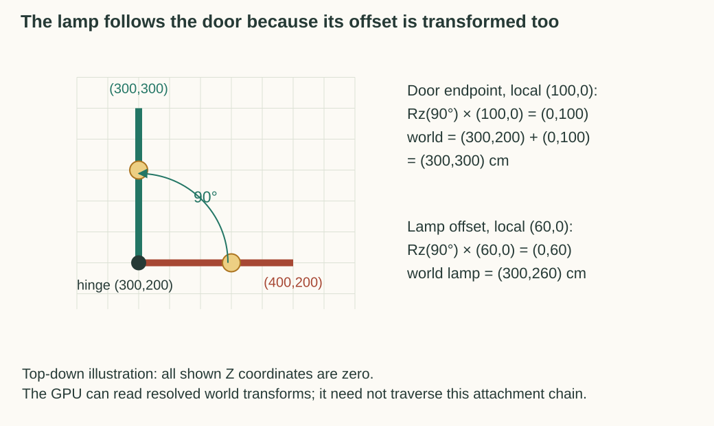
An actor's root component provides its principal transform. In the source, AActor::RootComponent is a USceneComponent reference, and retrieving the actor transform delegates to that component when it exists. This matters when designing an equivalent system: a useful gameplay container does not need to be the universal node that owns all transform arithmetic. Unreal can express a transform-only attachment node with no mesh, a mesh-bearing node, and several visible components owned by one actor. Actor.h exposes that distinction plainly.
The renderer needs another organization. To decide what is visible, it needs spatial bounds, visibility flags, and efficient arrays or spatial structures. The floor and matte block have no attachment relationship, yet both use the cube asset and can participate in similar rendering work. Conversely, the door and its attached indicator share motion ancestry while requiring their own material bindings. A visibility hierarchy groups objects because of space. A draw grouping groups them because of compatible rendering state. Neither should be forced to mirror the attachment hierarchy.
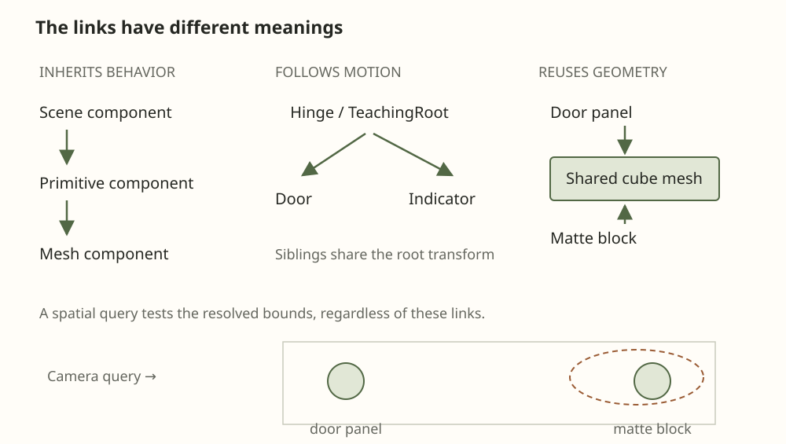
This is the first major architectural lesson. A scene is not adequately described by one recursive tree whose nodes own everything. It is a collection of related records with different lifetimes and access patterns. The authoring model may be a convenient tree, while the rendering model is a set of dense arrays. Our mannequin adds a bone hierarchy inside one renderable object. A mesh asset adds an LOD hierarchy. Nanite adds a hierarchy of geometry clusters. None is a replacement for the others, because each hierarchy answers a different question.
Unreal makes the renderer's separate organization explicit in FScene. Its packed arrays include primitive pointers, transforms, bounds, flags, and component IDs. The comments explain that a primitive's packed index addresses corresponding entries across these arrays. This is a practical structure-of-arrays pattern: a visibility pass can inspect bounds and flags without walking every gameplay object or loading every material. A different stage can follow a primitive reference to richer rendering information. The layout is described in ScenePrivate.h.
FScene: persistent renderer organization
| Information | Concrete Unreal data or operation | Use in the room |
|---|---|---|
| Primitive membership | Primitives and PrimitiveSceneProxies store scene-info and proxy pointers in aligned packed arrays. | Find the renderer’s registered door record without walking actors. |
| Spatial and visibility inputs | PrimitiveTransforms, PrimitiveBounds, PrimitiveFlagsCompact and PrimitiveOcclusionBounds. | Culling can read compact bounds/flags for many room objects. |
| Component lookup | PrimitiveComponentIds and PrimitiveComponentIdToInfoMap connect component identity to renderer records. | Route a change for this tile to its currently registered scene info. |
| Packed versus persistent index | Packed arrays use FPrimitiveSceneInfo::PackedIndex; persistent-index mapping supports a separate identity space. | Removing a neighboring primitive may compact storage without moving the tile in world space. |
Source for these selected fields and contracts: ScenePrivate.h, ScenePrivate.h.
For Arda, the consequence is immediate even before choosing an entity system. Preserve attachment relationships where they are useful for authoring and transform propagation. Resolve the resulting world transforms into a renderer-facing representation. Preserve geometry sharing with explicit asset handles. Let culling, sorting, and GPU allocation organize their own data. Modularity comes from keeping these meanings separate, then defining how a change in one representation updates the others. It does not come from giving every possible object the same enormous base class.
Crossing the thread boundary
The door begins to swing while the GPU is drawing the previous frame. Which transform should the renderer read? If it directly follows the gameplay component's mutable fields, it can observe a mixture of times: the new transform, the old bounds, and a material reference being replaced. Locking every access could restore consistency, but it would also couple rendering progress to gameplay progress. The problem is not merely that threads are dangerous. The two systems need permission to advance independently while agreeing on complete versions of scene state.
Unreal's basic answer is a render proxy. FPrimitiveSceneProxy holds the rendering-facing state of a primitive and provides specialized behavior for that primitive type. The source describes it as mirrored data for rendering a UPrimitiveComponent in parallel with the game thread, and explicitly expects subclasses for different primitive types. A static mesh supplies one implementation; a skeletal mesh or a landscape supplies another. The proxy is a bridge from an authoring object into renderer-owned behavior, not an instruction to serialize an entire actor hierarchy into a second copy. See the contract in PrimitiveSceneProxy.h.
For the door, the proxy is the renderer-facing description of how this kind of primitive can be drawn. It combines copied state with virtual operations; geometry buffers and material choices often belong to its concrete subclass or referenced resources. The following table describes the base contract, not a promise that every subtype supports every path.
FPrimitiveSceneProxy: rendering properties and primitive-specific behavior
| Information | Concrete Unreal data or operation | Use in the room |
|---|---|---|
| Identity and scene connection | PrimitiveComponentId, a Scene interface pointer, and a back-pointer to PrimitiveSceneInfo. | Connect the copied door state to its component identity and registered renderer record. These are CPU relationships. |
| Placement and conservative extent | LocalToWorld, Bounds, LocalBounds and ActorPosition, exposed through getters. | Place the door’s vertices and provide culling with the region that can contain its visible geometry. |
| Rendering policy | Flags/getters such as bRenderInMainPass, bCastDynamicShadow and bVisibleInRayTracing. | The door can participate in a camera pass, a shadow path and supported ray queries with different policies. |
| Per-view relevance | GetViewRelevance(View) returns FPrimitiveViewRelevance. | Answer whether the door contributes draw, shadow, static or dynamic work for this observation. |
| Conventional mesh descriptions | DrawStaticElements() and GetDynamicMeshElements() let a subtype supply mesh batches to collectors. | A static tile can expose reusable mesh descriptions; a view-dependent producer can gather descriptions for current views. |
| Specialized representations | Hooks such as GetDynamicRayTracingInstances() and GetInstanceSceneDataBuffers() expose supported ray/instance data. | A producer supplies the representation a consumer needs. A hook’s existence does not guarantee that every subtype implements it. |
| Primitive shader parameters | UniformBuffer and its update path represent primitive-level shader parameters where that binding path is used. | Make copied placement and related data available for shading; later we will see GPU Scene’s packed alternative. |
Source for these selected fields and contracts: PrimitiveSceneProxy.h, PrimitiveSceneProxy.h, PrimitiveSceneProxy.h, PrimitiveSceneProxy.h.
The debugging component pointer in this class is explicitly unsuitable for render-thread reads of gameplay state. Copying the transform into a proxy solves a concurrency problem; retaining a pointer to the original component does not remove that problem.
When the tile component creates its render state, UPrimitiveComponent::CreateRenderState_Concurrent updates bounds and, if it should be in the scene, adds the primitive through a registration context or through GetWorld()->Scene. The latter is an FSceneInterface, which exposes scene operations without making every engine component depend on the private renderer implementation. A component knows it can add or update a primitive; it does not need to know how the deferred renderer stores its internal arrays. The call is visible in PrimitiveComponent.cpp.
FSceneInterface: operations across a module boundary
| Information | Concrete Unreal data or operation | Use in the room |
|---|---|---|
| Registration | AddPrimitive() / RemovePrimitive() and batch variants. | A component announces that a rendering primitive enters or leaves the world. |
| Spatial change | UpdatePrimitiveTransform(). | The moving door reports a placement change without knowing the renderer’s array layout. |
| Implementation boundary | A virtual scene API implemented by the renderer’s FScene; callers hold the interface. | Engine-side components request scene operations without owning the renderer’s private storage. |
Source for these selected fields and contracts: SceneInterface.h.
The renderer-side scene integration introduces FPrimitiveSceneInfo. Keep its role distinct from the proxy. The proxy describes the primitive's rendering behavior and mirrored properties. The scene info manages the primitive's membership in a particular FScene: indices, cached drawing information, links to lighting and other scene systems, and lifecycle state. This split allows a geometry implementation to provide its meshes while the renderer manages where those meshes fit into the current scene. The declaration of FPrimitiveSceneInfo and its scene-management methods is in PrimitiveSceneInfo.h.
There is one scene-info record for the registered primitive proxy. Its data answers where the primitive is registered and which renderer records already exist for it. Optional lighting, Nanite and ray-tracing entries below are populated according to the primitive and enabled path.
FPrimitiveSceneInfo: membership, cached work and cross-system links
| Information | Concrete Unreal data or operation | Use in the room |
|---|---|---|
| Registered identity | Proxy, Scene and PrimitiveComponentId. | The renderer can reach the door’s specialized drawing behavior and its containing scene. |
| Storage and persistent identity | PackedIndex addresses aligned CPU scene arrays; PersistentIndex is exposed by GetPersistentIndex(). | A compacted array slot can change. Neither value is a vertex index, asset ID or globally permanent object ID. |
| Cached conventional drawing | StaticMeshes, matching StaticMeshRelevances, and StaticMeshCommandInfos. | Retain tile mesh descriptions and references to cached pass commands. “Static” here names a cached submission path. |
| GPU Scene allocations | InstanceSceneDataOffset / entry count; payload offset / stride; lightmap offset / count, exposed by accessors. | Find the GPU ranges assigned to the tile primitive’s placements, without embedding every placement in this CPU object. |
| Lighting and reflection links | LightList, LightingAttachmentRoot, indirect-lighting-cache state and cached reflection-proxy pointers. | Maintain applicable light interactions or capture associations; these are links/cache state, not a stored final pixel color. |
| Distance fields and Lumen | DistanceFieldInstanceIndices and LumenPrimitiveGroupIndices. | Relate a registered primitive’s instances to the representations used by indirect-lighting systems. |
| Nanite integration | NaniteRasterBins, NaniteShadingBins and NaniteMaterialSlots for supported mesh passes. | Connect the Nanite tile’s materials to specialized raster/shading work rather than assuming only conventional mesh commands. |
| Lifecycle and invalidation | Operations such as RequestStaticMeshUpdate(), FreeGPUSceneInstances() and removal of cached mesh commands. | Changing or removing the door invalidates and retires the renderer records derived from it. |
Source for these selected fields and contracts: PrimitiveSceneInfo.h, PrimitiveSceneInfo.h, PrimitiveSceneInfo.h.
If only the hinge transform changes, the scene updates copied placement, bounds and affected derived data. If the geometry description changes, cached meshes or commands may need rebuilding. If the door disappears, its scene membership and allocations must be retired. The proxy describes what the producer can render; scene info tracks how that producer currently participates in this scene.
The source directories reinforce this boundary. The Engine module contains the component and primitive-proxy contracts, while the Renderer module supplies FScene and renderer-specific scene information. RenderCore provides common rendering machinery such as shader and vertex-factory infrastructure. RHI, the rendering hardware interface, expresses buffers, textures, and commands for backend implementations. These are dependency boundaries rather than a requirement that every call move one step down a class tree. A component submits a semantic scene change; a pass eventually records hardware-facing work. Keeping the interface at the shared dependency boundary allows specialized producers to participate without exposing the renderer's entire private implementation.
The add path illustrates the handoff precisely. Unreal creates a primitive scene info, associates it with the proxy, captures the render matrix and bounds, and collects an add command. It then enqueues rendering work that sets the proxy transform, creates its render-thread resources, and attaches the scene info. Capturing those values makes the handoff deliberate. The render-side work consumes a prepared description; it does not need to rediscover the transform by traversing mutable actor state later. The ordering is explicit in RendererScene.cpp.
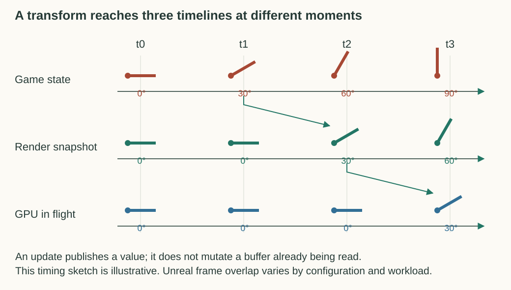
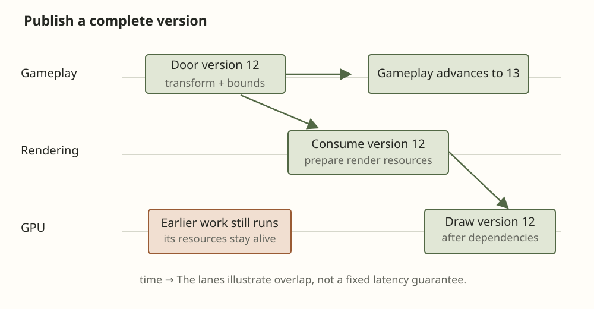
This is also why a pointer back to a component is not an invitation to read it from the render thread. FPrimitiveSceneInfo retains a debugging-only component interface pointer, but its comment explicitly warns against dereferencing it on the rendering thread because gameplay may modify the object concurrently. Identity may cross the boundary without granting read access to mutable state. In a custom engine, a stable handle plus a copied snapshot is often a clearer contract than a convenient raw pointer. Unreal's warning is in PrimitiveSceneInfo.h.
A camera introduces another lifetime. A render scene can persist for thousands of frames, but the current view describes a particular observation: matrices, viewport, show flags, and other view-dependent settings. Unreal uses FSceneView and related view-family structures for this purpose, with renderer-specific extensions for working state. The tile belongs to the persistent scene. Whether it is visible in the player's camera, a reflection capture, or a shadow view is a question asked of that scene. Storing a single global “visible” bit on the tile would confuse those observations.
View types: one observation versus persistent history
| Type / lifetime | Information it provides | Use in the room |
|---|---|---|
FSceneView | ViewMatrices, UnscaledViewRect, HiddenPrimitives / ShowOnlyPrimitives, FinalPostProcessSettings, and links to Family and State. | The player camera and a scene capture observe the same room with different placement, viewport and filtering. |
FSceneViewFamily | Views, Scene, RenderTarget and EngineShowFlags group shared rendering inputs. | Collect related views and the target/settings with which they will be rendered. |
FViewInfo | Renderer-specific extension of FSceneView, including PrimitiveVisibilityMap, PrimitiveViewRelevanceMap and PrevViewInfo. | Store this view’s culling results and working data, rather than one universal visible bit on the door. |
FSceneViewStateInterface | The persistent view-state interface reached through FSceneView::State; renderer implementations maintain history across observations. | A fresh per-frame view can refer to continuing temporal state. Some views have no persistent state. |
Source for these selected fields and contracts: SceneView.h, SceneView.h, SceneView.h, SceneRendering.h, SceneViewState.h.
The thread boundary therefore has two effects. It protects ownership, and it forces the engine to name what rendering actually needs. The proxy is not the gameplay object with fewer methods. It is a representation selected for a different consumer. An expandable system benefits from making that selection explicit: which fields are copied, which resources are shared with stable lifetime, which updates can be incremental, and which operations must recreate the representation. These questions become more consequential when the scene is also consumed by GPU culling and ray tracing.
Check the asset and component boundary against the room
Return to the baseline introduced at the start and inspect its actual object records. The room was constructed and rendered in the local Unreal 5.8.1 editor on an RTX PRO 6000 Blackwell using DX12 and Shader Model 6. Its seven visible cube components provide a measured version of the sharing and registration contracts we have just derived. They are the same baseline used in the independent Lumen essay; the additional fixtures later in this article are kept in a separate extension map so these controlled comparisons stay reproducible.
In the baseline, seven visible static-mesh components make the room: five enclosing surfaces and two blocks. All seven refer to /Engine/BasicShapes/Cube.Cube. There are seven placements and one shared mesh asset, with five material assets. The floor, ceiling and back wall share the neutral material. This is an unusually useful example because the relationship is measurable: duplicating a box-shaped object does not require duplicating the cube's vertex buffer. Each component supplies its own placement and material binding.
The authoring script creates a StaticMeshActor, obtains its StaticMeshComponent, calls set_static_mesh with the shared cube, assigns a material, and sets the actor's scale and location. Those are public authoring operations. When the component registers, the render-state lifecycle described in the previous chapter creates the rendering representation. The script does not directly allocate an FPrimitiveSceneInfo, write GPU Scene buffers, or create draw commands. Those are consequences of registration and renderer processing.
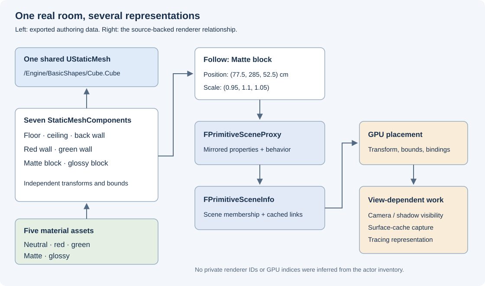
The actual room placements: locations, scales and world bounds
| Component's actor label | Location in UE centimeters | Scale of the 100 cm cube | World bounds half-extent in cm |
|---|---|---|---|
| Floor | (0, 250, −5) | (4, 5, 0.1) | (200, 250, 5) |
| Ceiling | (0, 250, 305) | (4, 5, 0.1) | (200, 250, 5) |
| Left red wall | (205, 250, 150) | (0.1, 5, 3) | (5, 250, 150) |
| Right green wall | (−205, 250, 150) | (0.1, 5, 3) | (5, 250, 150) |
| Back wall | (0, 505, 150) | (4, 0.1, 3) | (200, 5, 150) |
| Matte block | (77.5, 285, 52.5) | (0.95, 1.1, 1.05) | (47.5, 55, 52.5) |
| Glossy block | (−75, 380, 90) | (0.9, 1, 1.8) | (45, 50, 90) |
The CPU lighting lab describes coordinates in meters. Its layout maps to Unreal centimeters as . The sign on X keeps the red wall on the same screen side under the chosen Unreal camera orientation. This is an explicit coordinate conversion between examples, not an assertion that every Unreal scene should reflect X. Object paths and transforms in the inventory are the actual exported values; the table rounds insignificant floating-point representation noise.
Follow the matte block. Its cube begins at local coordinates bounded by ±50 cm. With no rotation, its world transform is , where cm and . The local corner becomes cm. The opposite corner becomes . Those values explain its actual bounds and floor contact. The shared cube asset never changes to contain those world coordinates.
For a general rotation and scale matrix , a local axis-aligned box with center and half-extents transforms to a conservative world axis-aligned box with center and half-extents , where absolute value is elementwise. To derive this, write every local point as with . Then each world-axis deviation obeys
LaTeX source
|(A\delta)_i|=\left|\sum_j A_{ij}\delta_j\right|\le\sum_j|A_{ij}|e_j.The bound is attained at a box corner for each axis, so it is the exact AABB of the transformed box. It is still only a bound on the mesh. This distinction becomes critical for rotated thin objects and for deformation that extends beyond the asset's original box.
Changes have lifetimes
Suppose the hinge rotates by five degrees. Rebuilding the door's vertex buffers would be wasteful because its local shape has not changed. Rebuilding the entire render proxy may also be unnecessary. The minimal change is a new world transform and corresponding bounds, together with any history needed to describe motion. Unreal exposes a transform-update path separately from render-state recreation. UPrimitiveComponent::SendRenderTransform_Concurrent updates bounds and calls UpdatePrimitiveTransform on the scene when the primitive is relevant to rendering. PrimitiveComponent.cpp is a useful example of representing a semantic change rather than declaring everything dirty.
Now replace the tile's material with glass. This may change which passes can draw it, whether it writes depth, and which shaders or draw commands are valid. Treating that as a new scalar in the transform table would miss its consequences. Conversely, changing a tint parameter inside a compatible material instance may leave the geometry and pass structure intact. Changing the mesh's triangle indices affects another category of state, potentially including acceleration structures used by ray tracing. A robust update system distinguishes these cases because their dependent work differs.
Unreal's component lifecycle maintains dirty states and deferred render updates. MarkRenderStateDirty records the need for render-state recreation, while the component update path also handles transform and dynamic-data changes. The renderer collects scene changes and applies them in its scene-update machinery. FScene::UpdateAllPrimitiveSceneInfos is a major coordination point for that work; its implementation includes material-uniform updates and the subsequent scene maintenance. These are not instructions to copy the entire scene every frame. They are facilities for collecting changes and updating the structures that depend on them. See ActorComponent.cpp and RendererScene.cpp.
Batching matters even when each individual update is small. Consider a stress-test variant of the planter display containing two hundred leaf instances on a moving tray. Gameplay may propagate two hundred new transforms. This is a scaling exercise, not the measured plant count in the extension capture. The rendering system can collect those transforms, reserve upload space once, and process contiguous work instead of issuing two hundred independently synchronized transfers. The correct unit of change remains one placement; the efficient unit of processing may be a batch. Unreal exposes batch-add and batch-transform operations, and GPU Scene maintains update and upload infrastructure for the resulting primitive and instance data.
There is a less visible problem when an object disappears. Suppose the game destroys the door’s indicator after submitting frame 120, while the GPU is still executing commands that reference the indicator's geometry. Removing the gameplay object is logically immediate, but releasing the memory is a separate operation. Future scene snapshots must stop referring to it. Existing render work must remain valid until its consumers finish. An engine therefore needs deferred destruction, reference ownership, fences, or equivalent lifetime tracking at each boundary. The exact mechanism can vary; the distinction between “no longer part of the scene” and “safe to free” cannot.
Unreal's primitive scene information participates in deferred cleanup, and the scene removal path processes queued render-side removal rather than asking the game thread to delete renderer state in place. GPU resources additionally follow the rendering hardware interface's resource lifetime rules. It would be misleading to turn this into a universal “wait two frames, then delete” rule. Different resources and execution modes can have different outstanding consumers. The source-level points of entry are PrimitiveSceneInfo.h and RendererScene.cpp.
Identity has to survive these transitions. Imagine that indicator A occupied slot 42, was removed, and indicator B later reused slot 42. A delayed update addressed only to “42” could now move the wrong indicator. A common engine-design solution is a generational handle: an index plus a generation counter. If slot 42's generation changes from 7 to 8, an update carrying {42,7} is rejected. This is a proposal we will use for Arda, not a claim that every Unreal primitive identifier uses this exact scheme. Unreal itself distinguishes several identities and indices, which is a warning against treating every integer as interchangeable.
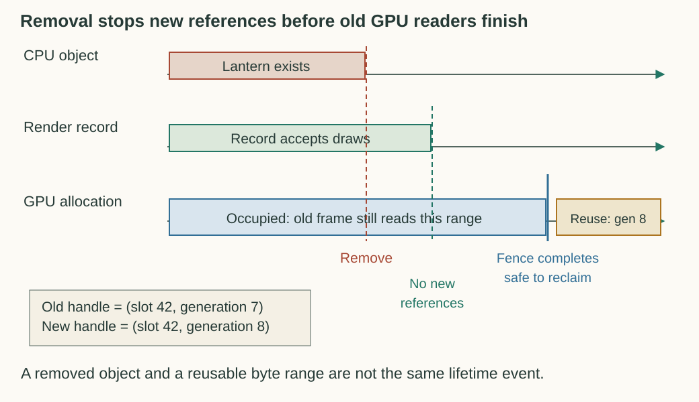
These lifetime rules affect debugging as much as performance. A useful update log can say that object {42,7} changed transform in scene revision 120, its GPU instance range moved during revision 121, and its removal became visible in revision 122. A log that records only a raw buffer offset cannot explain whether an apparent jump came from motion, compaction, or accidental reuse. Good scene representation makes those events distinguishable. The renderer should be able to rearrange storage without changing what object the rest of the engine believes it is addressing.
The scene becomes GPU data
Increase the leaf density in the room’s planters as a thought experiment: a thousand small placements can fit inside the same room. A CPU could bind each placement’s transform and issue one draw at a time. The captured extension uses a much smaller count, recorded later. That is a useful first renderer, but the submission overhead grows with object count and places the CPU in the middle of every visibility decision. A GPU-driven renderer instead needs the GPU to find object data by an identifier. A draw or a culling result carries an index, and a shader loads the associated transform, bounds, and flags from a scene buffer. This is the purpose of GPU-resident scene data. It is not a GPU copy of every gameplay field.
Unreal calls its management system FGPUScene. Its interfaces update persistent primitive data, upload dynamic primitive data for a view, track dirty primitives, and manage instance allocations. Its buffers distinguish primitive data, instance data, instance payloads, and lightmap data. That division matters: values shared by an entire primitive need not be repeated for every placement, while per-instance variation needs an addressable home. The declarations and separate upload buffers are in GPUScene.h.
FGPUScene: managing shader-readable scene storage
| Information | Concrete Unreal data or operation | Use in the room |
|---|---|---|
| Shared primitive records | PrimitiveBuffer and PrimitiveUploadBuffer. | Upload common state once for the primitive containing the three instanced pots. |
| Placed instances and optional payload | InstanceSceneDataBuffer, InstancePayloadDataBuffer, upload buffers and allocation/free operations. | Address each pot placement and its optional custom or dynamic data. |
| Lightmap records | LightmapDataBuffer, its allocator and upload buffer. | Provide separately addressed baked-lighting data where the rendering path uses it. |
| Change tracking and dynamic work | AddPrimitiveToUpdate(), Update() and UploadDynamicPrimitiveShaderDataForView(). | Upload changed persistent records or transient view-generated data without treating the whole scene as new every frame. |
Source for these selected fields and contracts: GPUScene.h.
Here “primitive” means a renderer-registered object with common scene properties, not necessarily one triangle. An instanced static mesh component can represent many placements under one primitive. Its common material and mesh relationships can be shared while each instance has its own transform and custom values. A single static mesh component usually presents a much simpler one-placement case. Understanding this distinction prevents a frequent counting error: one actor, one primitive, one mesh section, one instance, and one draw are not guaranteed to be the same unit.
Use a deliberately small example. Use the three pots as our example: one instanced component, three placements of its shared mesh. Give that primitive the illustrative persistent identifier 17. Its current instance allocation begins at entry 400. The entries at 400, 401, and 402 describe the three placements. Each instance record can lead back to primitive 17; the primitive record can identify the range that belongs to it. A visibility pass might produce a list containing only 400 and 402 because the middle pot is hidden. The renderer can then draw the surviving placements without pretending that the second surviving item is the original second instance.
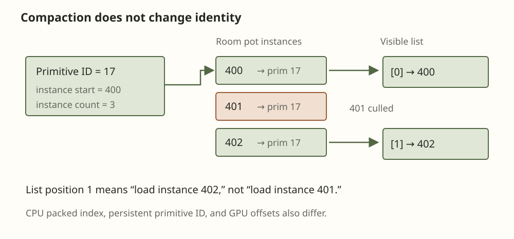
Unreal's shader-side FInstanceSceneData contains the loaded instance ID, current and previous transforms, bounds, a PrimitiveId, relative instance information, payload addressing, and other rendering fields. FPrimitiveSceneData exposes the instance range and shared primitive information. The loader in SceneData.ush interprets the packed representation rather than assuming that a C++ object can be read verbatim by a shader. The shader contract is visible in SceneData.ush; the CPU-side primitive packer is FPrimitiveSceneShaderData.
Crossing from C++ parameters to packed GPU records
| CPU-side type | Information it provides | Use in the room |
|---|---|---|
FPrimitiveUniformShaderParameters | Typed shader parameters: current/previous relative transforms, split world positions, bounds-related data, instance addressing and CustomPrimitiveData. | Express the pot primitive’s shared shader inputs; a uniform-buffer path can bind these parameters. |
FPrimitiveSceneShaderData | Data is a fixed-stride array of FVector4f; Setup() and BuildDataFromProxy() perform the packing. | Write the GPU Scene representation explicitly. Copying the bytes of FPrimitiveSceneProxy would include unrelated CPU fields and pointers. |
Source for these selected fields and contracts: PrimitiveUniformShaderParameters.h, PrimitiveSceneShaderData.h.
FPrimitiveSceneData: a decoded shader view of shared primitive state
| Information | Concrete Unreal data or operation | Use in the room |
|---|---|---|
| Identity and instance range | PersistentPrimitiveIndex, InstanceSceneDataOffset, NumInstanceSceneDataEntries. | Connect this primitive to the placements that belong to it. |
| Placement and history | LocalToWorld, WorldToLocal, previous transforms and WorldToPreviousWorld. | Interpret primitive-level coordinates and motion using the shader’s specified large-world representations. |
| Extent and displacement | Local/pre-skinned bounds, object radius, MaxWPOExtent and material-displacement limits. | Communicate conservative extent and material-driven movement to consumers that need them. |
| Optional data addressing | Instance payload offset/stride, lightmap indices, and Nanite resource/hierarchy fields. | Locate another representation’s records where that feature is active. |
| Policy and material inputs | Flags, VisibilityFlags and CustomPrimitiveData. | Apply primitive policy and read shared material values without repeating them for each instance. |
Source for these selected fields and contracts: SceneData.ush.
FInstanceSceneData: a decoded shader view of one placement
| Information | Concrete Unreal data or operation | Use in the room |
|---|---|---|
| Address and parent | InstanceId, PrimitiveId, RelativeId; InstanceId is set from the address used to load the record. | Identify pot placement 402 and reach its shared primitive data. This is not the actor’s object identity. |
| Placement, history and orientation | LocalToWorld, PrevLocalToWorld, WorldToLocal, scale terms and DeterminantSign. | Place this pot and handle mirrored/nonuniformly scaled instances and motion. |
| Bounds and update state | LocalBoundsCenter, LocalBoundsExtent, LastUpdateSceneFrameNumber, ValidInstance and flags. | Cull or reject a placement using the instance record’s state. |
| Variation and payload | Payload offsets, RandomID, and conditional custom-data offset/count fields. | Let one pot vary its tint or other supported material inputs while sharing geometry. |
| Specialized data | Nanite resource/hierarchy fields, SkinningData and lightmap/shadowmap UV bias. | Give an enabled geometry or lighting path the addressing information it needs; population depends on flags and configuration. |
Source for these selected fields and contracts: SceneData.ush.
These two shader structs are logical values returned by loaders. Their convenient field names do not specify one C++-compatible struct per GPU buffer slot; the packed buffer encoding and optional payload layout remain separate contracts.
Now remove another primitive that precedes our pots in a dense CPU array. The scene may move primitive 17's CPU record from packed position 9 to packed position 8. That is not movement in world space, and it need not mean its persistent primitive identifier changes. Unreal explicitly documents that FPrimitiveSceneInfo::PackedIndex may change when primitives are added or removed. FScene provides a map from persistent primitive indices to packed indices. Meanwhile, an instance allocation can move for its own reasons. Any system caching an offset must participate in relocation or resolve the current offset from a valid handle. See PrimitiveSceneInfo.h and ScenePrivate.h.
The physical buffer layout is an implementation decision underneath this logical model. A structure-of-arrays layout can let adjacent shader lanes read the same field for neighboring instances efficiently. A tiled arrangement may improve locality while controlling allocation overhead. Unreal's current GPU Scene exposes tiled instance-data layout parameters, so it would be inaccurate to present one historical flat record diagram as its permanent byte layout. Our pot example names logical entries and relations; its identifiers and allocation offsets are worked values, not exported GPU addresses. A production implementation must additionally specify alignment, field encoding, precision, and CPU/shader version agreement.
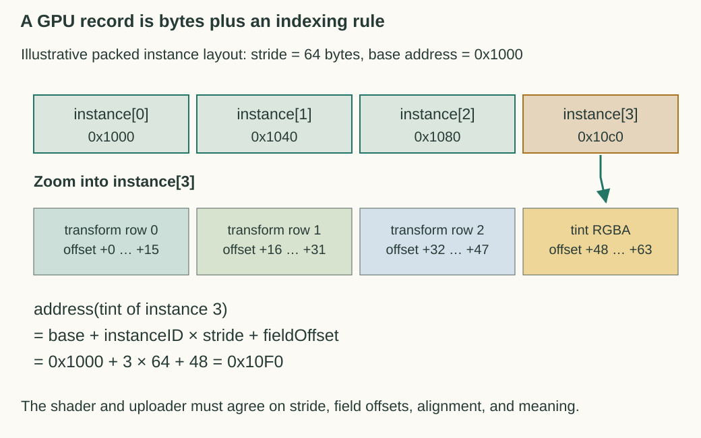
The visibility list itself is the result of several different tests. Frustum culling rejects bounds outside the camera's view volume. Occlusion culling rejects candidates hidden behind other geometry, using a visibility method appropriate to the renderer. Level-of-detail selection chooses how much detail surviving geometry needs at its projected size; it is not the same as deciding whether the object exists. Hierarchical tests can reject a whole group when its enclosing bounds fail. CPU and GPU paths can divide this work differently, but every result is specific to a consumer or view. Our visible list containing 400 and 402 does not authorize deleting instance 401 from shadows or ray tracing.
Updates then become an upload problem. If only the door and character moved, unchanged tiles should retain their data. Dirty ranges or scatter uploads can update selected records. GPU-generated particle data introduces a second writer, so ordering must ensure that simulation has finished before culling or drawing reads it. A render graph is useful here: it records that one pass writes a resource and another reads it, allowing barriers and scheduling to be derived. The persistent scene still owns the meaning and lifetime of the records; the graph owns the frame's work and resource dependencies.
This is the point at which a modular design either becomes clear or begins to collapse. Geometry modules should not hard-code the pot primitive's allocation offset into unrelated material or lighting systems. They should publish renderable data and receive well-defined scene addressing. Shaders should share explicit data-access conventions. Streaming may replace geometry pages without replacing instance identity. Culling may compact visible work without replacing persistent identity. Those separations allow GPU algorithms to evolve while gameplay continues to say “move the door” rather than “rewrite entry 402 of the current visibility buffer.”
From a proxy to a draw
What a draw asks the GPU to do
Before giving Unreal's intermediate structures names, follow the simplest possible tile through the GPU. A draw is a command to process a particular range of geometry, potentially repeated for several instances, using the currently selected rendering program and state. For our two-triangle tile, an indexed draw can request the six indices [0,1,2,0,2,3]. The GPU fetches the referenced vertices, transforms them toward the camera, determines which image samples the triangles cover, and runs shading work for surviving samples. One draw is therefore neither one triangle nor one pixel. It can generate many triangles and many visible samples.
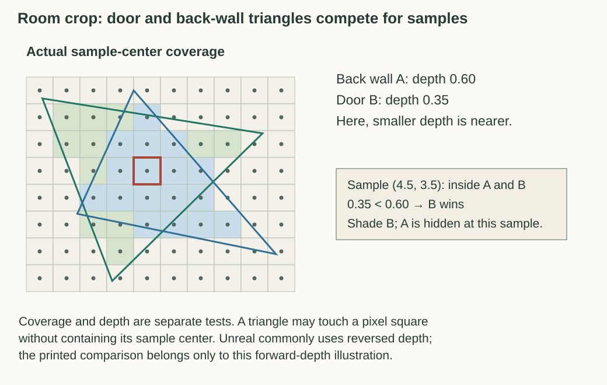
A shader is a program that runs on the GPU. A shader stage is a particular place where such a program participates in a pipeline. In a conventional raster draw, a vertex shader processes vertex inputs and produces projected positions plus values that later stages can use. Rasterization finds covered samples and interpolates appropriate values across the triangle. A pixel shader evaluates a covered fragment, for example producing surface attributes or color. A compute shader performs general GPU work without requiring this vertex-to-triangle pipeline; culling or deformation can use it and produce buffers that later draws consume. Geometry paths can add or reorganize stages, so this describes our first conventional triangle path.
The program needs inputs. A binding associates a shader input with an actual resource or value: this vertex buffer, that ceramic texture, this material-parameter buffer, or the GPU Scene buffer holding transforms. Render state supplies additional rules, such as whether to reject back-facing triangles, how to compare depth, and whether to blend with an existing color. A shader permutation is a compiled variant selected for a particular combination of features, such as a material with opacity masking and a particular vertex factory. Choosing another variant can change the executable program; changing a tint binding may only change data consumed by the same program.
A pass is a named stage of rendering work with a purpose and resource dependencies. A depth pass finds the nearest accepted surfaces. A base pass evaluates the surface information needed by the selected renderer. A shadow pass observes geometry from a light-related view. A pass can contain many draws, and the same tile can be drawn in more than one pass with different shader variants, bindings, and state. The word pass tells us why work is being done; the word draw names a particular submitted geometry operation. Later we will see exactly what the deferred base pass stores, but we already have enough vocabulary to understand how geometry becomes work.
Finally, indirect arguments are a small GPU-readable record of drawing parameters, such as counts and offsets, consumed by an indirect draw. If GPU culling finds that only eight of ten tiles remain visible, it can write the surviving count and related work data. A later draw reads those arguments without asking the CPU to read back the answer first. This changes who supplies the drawing parameters; it does not change the meaning of a mesh asset, a scene instance, or a material.
Unreal keeps the description separate from the command
We have placed geometry and made its data available to the GPU, but we have not yet said how Unreal turns that information into draw work. The room tile may appear in a depth pass, a shadow pass, the main surface pass, an editor selection pass, and a reflection view. Each consumer needs a different shader combination or render state. If the tile component directly issued a fully specified graphics command, it would either need to know every consumer or force all consumers to accept the same command. Unreal inserts an intermediate description instead.
That description is FMeshBatch. It identifies a vertex factory, a material render proxy, and one or more mesh elements. A mesh element describes such things as the index buffer, first index, triangle count, instance count, and optional indirect arguments. In the simplest tile example, it names our six indices and the data needed to fetch the tile's vertices. The batch is rich enough for a renderer to understand what can be drawn, but it has not yet chosen every pass-specific shader and GPU state. The fields are in MeshBatch.h.
FMeshBatch and FMeshBatchElement: describing drawable work
| Information | Concrete Unreal data or operation | Use in the room |
|---|---|---|
| Batch: geometry interpretation | FMeshBatch::VertexFactory selects the geometry-access implementation. | Interpret the tile’s static-mesh streams or a character’s supported deformed inputs. |
| Batch: appearance and elements | MaterialRenderProxy, Elements, primitive topology and pass-policy flags. | Associate a section’s material with one or more element descriptions; this is not yet a selected pass shader. |
| Element: indexed range | FMeshBatchElement::IndexBuffer, FirstIndex, NumPrimitives, vertex bounds and BaseVertexIndex. | For the simple tile, describe two triangles starting at index zero. |
| Element: repetitions or indirect work | NumInstances, optional instance runs, IndirectArgsBuffer and IndirectArgsOffset. | Draw compatible tile placements repeatedly, or obtain draw arguments from a GPU buffer on a supported path. |
| Element: primitive data binding | PrimitiveUniformBuffer, PrimitiveUniformBufferResource and primitive-ID mode/data. | Provide a route to this primitive’s shader inputs; a mesh element need not contain a copy of all scene data. |
Source for these selected fields and contracts: MeshBatch.h.
The term vertex factory sounds like an object that creates geometry, but its central rendering role is an adapter between a geometry representation and shader inputs. A static mesh can read position and UV buffers. A skinned mesh may fetch bone influences and deformed positions. A particle sprite can derive its corners from particle data and the current view. Material code wants meaningful values such as world position, normal, and texture coordinates regardless of how they were obtained. A vertex factory supplies the geometry-specific machinery and shader integration that makes this possible. The static-mesh case is concrete in LocalVertexFactory.ush.
Geometry access and view relevance are different contracts
| Type | Information it provides | Use in the room |
|---|---|---|
FVertexFactory | GetType(), vertex streams/declarations and type-specific shader integration describe how geometry inputs are fetched. | A static-mesh and a skinned-mesh path can supply the inputs expected by the material/pass without sharing one buffer layout. |
FPrimitiveViewRelevance | Flags including bDrawRelevance, bStaticRelevance, bDynamicRelevance, bShadowRelevance and bRenderInMainPass. | Tell a view which kinds of work the primitive can contribute. This is relevance metadata, not a draw command or a final occlusion result. |
Source for these selected fields and contracts: VertexFactory.h, PrimitiveViewRelevance.h.
Consider the tile's shadow. If it is opaque and has no vertex displacement, the shadow pass may need little more than positions and transforms. Its color texture is irrelevant. If it is a leaf card whose material rejects transparent pixels, the shadow needs the opacity-mask logic too; otherwise the entire rectangle casts a shadow. If the material moves vertices in wind, the shadow must use a compatible displaced shape. The renderer therefore combines geometry access, material behavior, and the purpose of the pass. “Draw this mesh” is insufficiently precise until those three inputs meet.
FMeshPassProcessor is the abstraction at that meeting point. A concrete pass processor receives mesh batches, determines relevance, chooses shader permutations and state, and builds FMeshDrawCommand records. A mesh draw command contains the information required for submission through the rendering hardware interface, including shader bindings and drawing state. The source describes the processor as transforming descriptions from scene proxies into commands ready for the RHI command list. See MeshPassProcessor.h.
From pass decisions to FMeshDrawCommand
| Information | Concrete Unreal data or operation | Use in the room |
|---|---|---|
FMeshPassProcessor: selection | Pass-specific processing of FMeshBatch inputs chooses relevant shaders, bindings and render state before producing commands. | The same tile description can lead to different depth, base-pass and shadow work. |
| Command: resources | ShaderBindings, VertexStreams and IndexBuffer. | Bind the selected shader inputs and geometry resources for the particular draw. |
| Command: pipeline and dynamic state | CachedPipelineId, StencilRef and PrimitiveType. | Record the pipeline-state identity and additional state needed by submission. |
| Command: arguments | FirstIndex, NumPrimitives, NumInstances, plus direct vertex parameters or IndirectArgs. | Record the selected range and repetition/indirect arguments. |
| Command: primitive addressing | PrimitiveIdStreamIndex, together with scene/submission data supplied around the command. | Connect an instanced draw to the appropriate scene records. The command is not a complete copy of the world. |
Source for these selected fields and contracts: MeshPassProcessor.h, MeshPassProcessor.h.
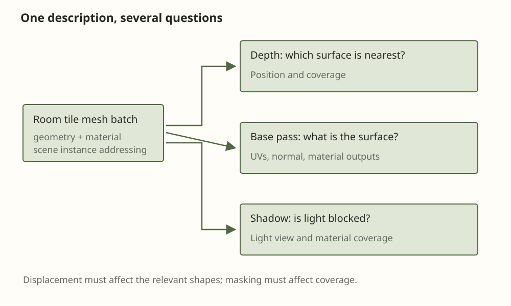
Unreal also distinguishes work that can be cached from work that must be gathered for the current view. A proxy can submit static elements through DrawStaticElements or gather dynamic elements through GetDynamicMeshElements, subject to its view relevance. In this vocabulary, “static” describes a rendering submission path and caching opportunity; it is not a universal synonym for “the component can never move.” A transform update can often retain geometry and compatible cached commands because the shader reads current scene data through an ID. View-dependent generated geometry may require a different gathering path. The proxy interfaces explain this split in PrimitiveSceneProxy.h.
Caching creates another invalidation obligation. If a command embeds a binding that changes, the cached command must be rebuilt or use an indirection that remains valid. If only an instance transform changes in GPU Scene, a command using that scene data may remain useful. If a material switches from opaque to translucent, the old pass selection is wrong even if the geometry buffer is unchanged. The update categories from the preceding chapter now acquire concrete costs: some touch only data, while others alter the compiled interpretation of that data.
Instancing and indirect drawing fit naturally into this separation. Compatible commands can share state while supplying multiple instance IDs. GPU culling can write an argument buffer containing a surviving instance count, allowing an indirect draw to consume the result without a CPU readback. This does not mean that every Unreal geometry path goes through one identical mesh-command pipeline. Nanite uses specialized visibility and material work, and hair or volume rendering introduces additional paths. The general contract remains valuable: geometry is described independently from the frame's decision about how and where to render it.
For a new engine, the safe extension point is therefore not an unrestricted callback that issues arbitrary GPU commands during scene traversal. It is a representation provider with explicit resources, bounds, material requirements, pass capabilities, and lifetime. The renderer can then schedule the work, validate dependencies, and decide which descriptions can be cached. A low-level escape hatch may still be necessary, but it should not be the only way to add a new geometry type. Otherwise every extension becomes a second renderer with its own inconsistent scene rules.
Count a tiled-floor variant all the way through
As a controlled replacement for a patch of the baseline floor, design one tile-kit actor with three visible components. This is a worked submission plan, not the measured draw count of either capture. Two are ordinary static-mesh components, placing two tiles independently. The third is one instanced-static-mesh component containing ten more tile placements. All twelve placements use the same mesh asset, which has two material sections: ceramic and a metal inset. Assume conventional non-Nanite rasterization, opaque materials, all placements visible, and no additional geometry or editor passes. We will deliberately preserve both section ranges in each of two passes, depth and base, to make the accounting transparent. An optimized Unreal frame may merge, omit, split, or otherwise organize commands differently.
The authoring count is one actor and three mesh-bearing components. Under the ordinary registration path in this example, those components create three primitive proxies and three primitive scene-info records, so the rendering scene has three primitives. The placement count is twelve: one for each ordinary component and ten belonging to the instanced component. There is still only one shared mesh asset and one set of its two section definitions. Section identity describes which triangles use which material binding; it does not become a new actor or a new world placement.
Now count the illustrative draw submissions. Each ordinary component contributes two section draws to each of two passes: 2 components × 2 sections × 2 passes = 8 draws. The instanced component contributes one draw for each section and pass, with each draw processing ten instances: 1 group × 2 sections × 2 passes = 4 draws. The total is twelve draws in this deliberately simple submission plan. Those draws cover 12 placements × 2 sections × 2 passes = 48 placement-section-pass combinations. Instancing grouped work; it did not make nine of the ten tiles cease to exist.
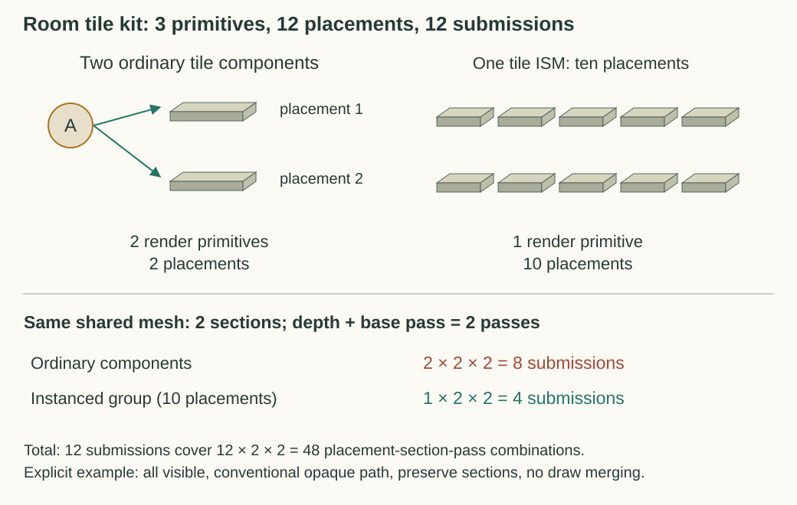
A cached command also does not eliminate that work. It can retain compatible shader choices, bindings, and state so the CPU need not rebuild the same description every frame. The GPU still renders the relevant instances. Moving the seventh instanced tile can update its transform and bounds while leaving shared geometry and compatible cached commands intact. Replacing the metal inset with a translucent material changes pass requirements and invalidates the old opaque interpretation. Removing the instanced component removes one primitive and its ten placements, not ten actors. These different counts explain why optimizing actor count, primitive count, draw count, and triangle count can lead to different decisions.
Inspect the room as geometry and view-dependent work
The lit image hides both the simplicity of the source geometry and the hierarchy of decisions that makes it visible. Switch the same camera to wireframe. The enclosing walls and the blocks are transformed instances of a cube; they do not become complex geometry merely because indirect light produces detailed gradients on their surfaces. A material, a lighting cache, and a depth discontinuity can create image detail without adding vertices.
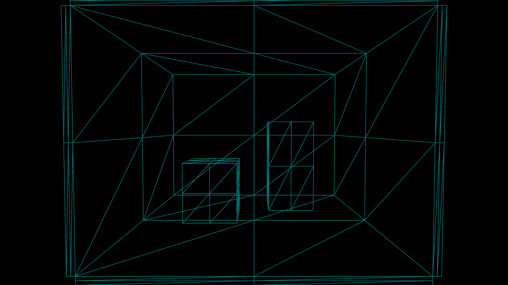
Now display bounds. The renderer can reject a component's bound without visiting every triangle. If the bound intersects the view, that is permission to do more work, not proof that all its triangles are visible. The matte block can hide part of the back wall even while both component bounds are inside the camera. A shadow view has different visibility from this camera. The bounds overlay makes the culling input visible; it is not a visualization of every internal culling decision or a measurement of draw count.
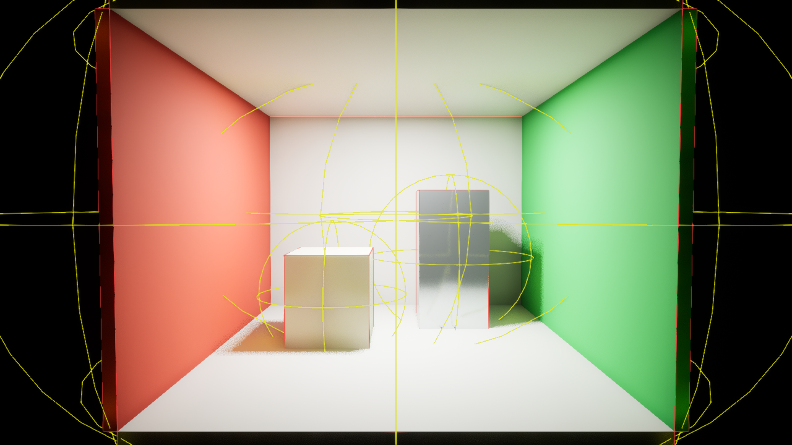
The chain to remember is component → proxy behavior → scene membership → GPU-addressable placement → view work. The component owns editable state. The proxy presents a rendering snapshot and geometry-specific behavior. Scene info associates it with the renderer's persistent organization. GPU Scene makes needed data accessible to shaders. The view chooses relevant work. None of these transitions means that the seven UStaticMeshComponent objects are copied byte-for-byte into a GPU buffer.
A depth image is a useful next checkpoint because it contains the result of visible-surface selection without the full lighting solution. The front of the matte block wins where it overlaps the back wall; the back wall remains represented elsewhere. The stored depth convention and the debug view's display mapping are separate matters. For this capture, a native post-process material reads linear SceneDepth in centimeters and divides by 1,000 after tone mapping. Its shader output reaches white at ten meters. This readable display is a custom diagnostic of the actual depth buffer, not raw device Z; do not confuse it with the engine's default depth-view scale.
SceneDepth / 1000, with the divisor in centimeters. White represents ten meters at the shader output. This is not a raw floating-point depth export or the default BufferVisualization mapping. Open image at full size.For Arda, the corresponding debugging feature should expose both levels: human-readable overlays and machine-readable records with units. A bounding-box screenshot answers whether placement is plausible. A bounds export can verify exact values. A depth visualization reveals discontinuities; an untonemapped depth export supports numerical comparisons. Keeping these forms together makes the scene system testable without confusing a display transform with the underlying data.
The room needs more than static meshes
We can now give every object an identity and a safe route into rendering. The next question is what each object should contain. The room’s floor, a small heightfield exhibit, the walking mannequin, a basin jet, and smoke from an effects station should not all be forced into the same authoring structure merely because they occupy one room. The mannequin and plants are captured additions; the specialist fixtures in the following paragraphs are proposed substitutions or additions, illustrated in the compatibility chapter. We will compare five representations by asking what is stored, how a visible shape is reconstructed, and what a change invalidates. Their concrete Unreal types and feature compatibility are collected later, after the mechanisms have a meaning.
Keep three levels separate as we do this. A file format describes imported data. A geometry representation describes the facts the engine preserves, such as connected vertices, sampled heights, or a density field. A GPU topology describes how a submitted stream assembles into triangles, lines, or points. Unreal's hardware-facing topology definitions include all three, but the presence of a topology does not by itself supply an authoring system, a material interface, or a ray-tracing representation. Those are additional contracts. The topology enum records these low-level choices.
The conventional indexed floor tile remains our reference. Its connectivity and vertex attributes can stay resident while many placements reuse them. The two-section tile variant adds appearance ranges to that connectivity. A Nanite-enabled version can instead store derived cluster and streaming data for its specialized geometry path while retaining the same object identity and material assignments. A cluster is a small group of triangles processed together. Changing the way triangles are stored and selected does not remove the need to know which tile is moving, which material it uses, or which bounds enclose it.
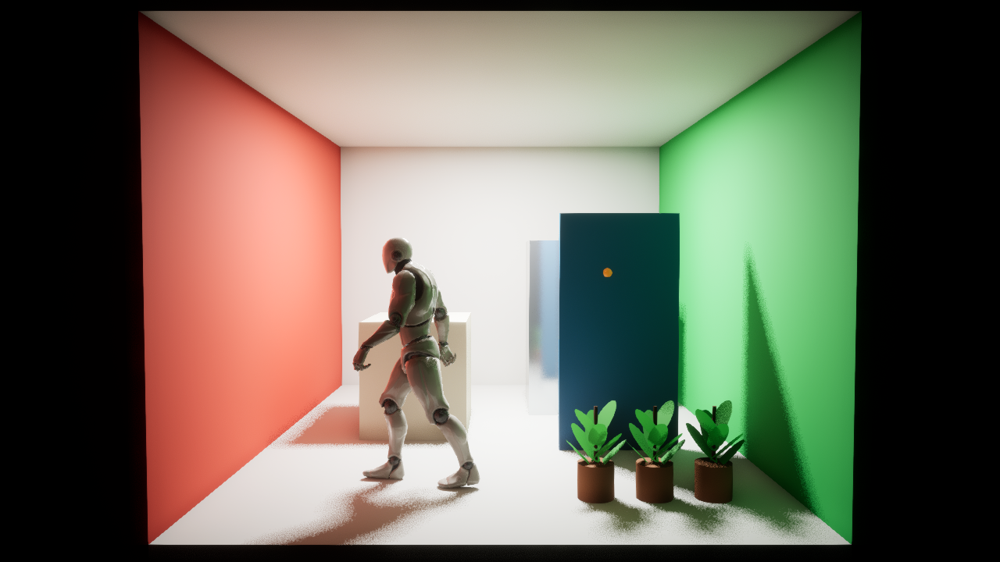
SceneRepresentationRoom; the extension walkthrough records their assets, counts, and edits. Open image at full size.A sampled heightfield reconstructs a floor exhibit
Put a small terrain exhibit on a tray inside the room. Four neighboring samples have heights 0, 0, 10, 10 centimeters, so the patch rises by ten centimeters across a cell. We need not store every horizontal coordinate independently: the grid location supplies those coordinates, and the height sample supplies the vertical coordinate. Connecting neighboring samples reconstructs a triangle surface. Using coarser samples farther away reduces the work while retaining the broad shape. This regularity makes heightfields useful for large terrain.
The saving comes with a restriction. At one horizontal coordinate the heightfield supplies one surface height. An overhanging ledge on the exhibit needs both a lower and an upper surface at some of the same horizontal coordinates; a single ordinary heightfield cannot express that shape. The tray can use a heightfield for its mound and a separate mesh for an overhanging ledge. The two objects can share lighting and visibility infrastructure without sharing their internal geometry format. Selecting a representation is choosing which shapes are cheap to express and which are difficult or impossible.
Unreal Landscape preserves this sampled structure through heightmap data and divides the terrain into components suitable for rendering and updates. Weightmap data answers a different question: how much grass, dirt, or rock should contribute to the material at a location? Raising a height sample changes the surface and its bounds; painting a dirt weight changes appearance without necessarily changing connectivity. That is a concrete reason to keep geometry and material updates separate even inside one specialized terrain system. LandscapeComponent.h exposes the distinct height and weight textures.
The same reconstruction idea appears in specialized heightfield and water producers. A Virtual Heightfield Mesh uses height-related data to generate its renderable surface; a water mesh can provide a surface that wave logic subsequently displaces. They need their own reconstruction and update policies, but the renderer still needs a placed object, conservative bounds, and material requirements. A water surface also needs a lighting and transmission path appropriate to water. Its existence in the main view alone says nothing about whether another subsystem can trace its exact displaced shape.
An indexed surface can change its positions or its connectivity
Place the mannequin on the room’s floor, in front of the matte block. Its triangle connectivity can remain fixed while its vertices move relative to its origin. A skeleton supplies a hierarchy of bone transforms, and skinning weights say how strongly each bone influences each vertex. The current pose reconstructs a new surface from the same reference mesh. A morph target instead stores vertex offsets, so a facial expression changes shape by blending those offsets. Cloth simulation or a mesh deformer can supply further position changes. These mechanisms produce geometry for a particular time; they are not additional world placements of the entire character. Unreal's skeletal-render update interface explicitly carries morph information and current/previous pose policy. See the skeletal render update contract.
Now compare the character's sleeve with the cable along the room’s skirting. A spline-deformed cable can keep its indices and use a curve to reposition the mesh along a path. A skeletal sleeve keeps indices and blends bone-related transforms. A baked Geometry Cache can play recorded shape samples. The authoring inputs and runtime costs differ, but each path must eventually tell its consumers what surface exists now, what it was previously, and what bounds enclose it. If we hide those distinctions under one method called “animate,” a ray consumer cannot know whether it can reuse local geometry, update positions, or needs a different representation.
Cut a hole through the room’s removable wall test panel and the situation changes again. Moving existing vertices is insufficient if the operation introduces new boundaries and triangles. An editable dynamic mesh preserves connectivity that can be modified, then updates its rendering buffers. A procedural mesh producer can instead generate fresh triangle sections from an algorithm. Changes limited to positions may admit partial uploads; changing index connectivity can invalidate section ranges, derived bounds, and acceleration structures. Unreal's dynamic-mesh component deliberately supports partial render updates and internal chunking, which are useful because not every edit should become a full replacement. The dynamic-mesh declaration describes these update facilities.
A fracture adds a third kind of change. The same wall test panel breaks into pieces, each of which may retain its local surface while acquiring a new rigid transform. A Geometry Collection represents those pieces and their simulation relationships. It is wasteful to treat every moving shard as an arbitrary deformation of a single enormous vertex array if the local pieces can be reused. The scene still needs stable ways to address them and a policy for when clustered pieces become independently relevant to rendering. Brush or constructive geometry is yet another authoring route to surfaces or volumes; its editing representation should be converted or interpreted for each consumer rather than mistaken for a universal GPU primitive.
Repetition uses the same separation in the opposite direction. Ten identical floor tiles can share one indexed surface while publishing ten transforms. Foliage can manage many such placements, and an instanced component can store custom values such as tint or wind phase beside each transform. A component's placement order and its current rendering-buffer order may differ, so custom values must follow the correct instance mapping. The source makes that per-instance data explicit. See the instance transform and custom-data records. The useful question is not “is this a static mesh or an effect?” but “which shape data is shared, and which values change per placement or per frame?”
Curves and particles reconstruct a visible surface
Add a small basin to the room’s effects station and let it emit droplets. A simulation can preserve only a position, size, velocity, age, and color for each droplet. To draw a sprite, the renderer constructs corners around the position, often oriented toward the camera, and joins them into triangles. The visible rectangle is reconstructed from a compact record; it need not exist as a persistent authored mesh. Its apparent round droplet shape may come from opacity in a texture. This explains both the efficiency and the limitation: a camera-facing particle can look convincing from the player view while needing a different interpretation for a shadow or a ray query.
A continuous water trail needs a different reconstruction. Store an ordered sequence of particle positions, estimate a direction along the sequence, and build a strip with two sides. Connecting neighboring pairs produces a ribbon. Changing the order can change the visible surface even if the set of point positions is unchanged. Width, facing rules, twisting, and degenerate segments therefore belong to the ribbon contract. A mesh-particle renderer takes another route: it treats each particle transform as a placement of a shared mesh, much like the instanced plant leaves. Unreal provides separate Niagara renderer implementations for these interpretations, confirming that simulation attributes do not prescribe one geometry topology. The sprite renderer is one concrete entry point.
A proposed groom on the room’s mannequin makes the curve interpretation much more demanding. The captured template mannequin has no groom; this is an additional provider to test. A groom can store curves with many points, and simulation guides can control the motion of a much larger set of visible strands. Fine strands require specialized treatment for visibility, light transmission, and shadows. Cards instead approximate groups of hairs using textured surfaces, while a mesh representation can provide a coarser shape. These are alternate representations of the same intended appearance, not three interchangeable storage encodings with identical results. The chosen representation changes cost, silhouette, transparency, and supported platforms. Epic describes this reconstruction pipeline and its alternatives in Groom Scalability and Performance.
Our skirting cable, basin ribbon, and mannequin hair all begin with curve-like information, yet none can be rendered correctly by a generic instruction saying only “draw curve.” The cable reconstructs a substantial indexed surface around a path. The ribbon reconstructs an oriented strip. Hair uses many thin strands and a dedicated shading treatment. A useful geometry interface names the generated attributes, bounds, history, and consumer capabilities. The mathematical similarity of the inputs does not establish identical renderer support.
Point samples describe observations, not connectivity
Suppose we scan the room with LiDAR. The result can be a set of measured positions and colors, perhaps with additional attributes, without indices connecting neighboring samples into triangles. A point renderer can draw visible marks or finite footprints for those samples. From a distance, sufficiently dense marks can suggest a continuous wall. Up close, holes and uneven sampling may reveal that the surface was never actually reconstructed. The apparent continuity in the image is not proof of watertight geometry.
The distinction matters when the camera approaches the scanned door or a reflection ray needs to intersect it. We must decide what a point means geometrically: an infinitesimal sample, a billboard, a disk, a sphere, or evidence used by a surface-reconstruction algorithm. Each answer creates different silhouettes and intersections. Building a triangle mesh from the scan introduces assumptions about how samples connect; it is a derived product with its own revision and quality. Unreal's LiDAR Point Cloud plugin supplies importing, processing, and rendering, but its presence does not automatically turn every scan into every other geometry representation. Epic's plugin description identifies that scope.
A collision sphere and a signed distance field reinforce the same lesson. They can be excellent descriptions for their intended queries while providing no ordinary shaded surface to the main raster path by themselves. A mathematical implicit surface needs an explicit tracing or conversion implementation. Registering a producer should therefore declare what it can deliver, rather than inherit a claim of complete support from a broad label such as “primitive.” We will use exactly this failure case when designing an Arda point provider.
A volume describes matter along the whole ray
The final proposed fixture is mist above the room’s basin. A surface tells us where a boundary is. A volume can tell us how much matter exists at points throughout a region. Consider a ray crossing one meter of uniform absorbing mist with extinction coefficient 2 m−1. In a simple absorption-only model, its surviving fraction is exp(−2 × 1) ≈ 0.135. There need not be a single opaque triangle at which the ray stops. Several portions of the path contribute to attenuation, and scattering or emission can add light along that path.
A ray marcher approximates this integral by taking samples along the ray. If the density changes with position, it accumulates the contributions of those local samples. Smaller steps can recover more detail at higher cost; empty regions invite skipping or sparse storage. A Sparse Volume Texture stores volumetric attributes while avoiding a fully dense allocation for unused regions. Its animated frames can describe evolving smoke. Unlike a particle sprite with a painted smoke image, the data describes a three-dimensional field whose result can change coherently with the viewing direction.
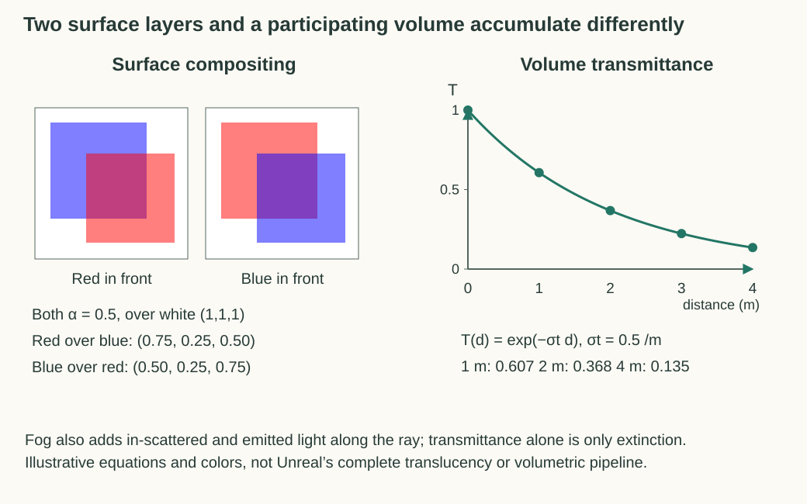
Unreal's heterogeneous-volume path combines a volume-domain material with such data. The material describes how sampled values affect the volume's optical properties, while the component provides placement and playback state. A bounding region tells the renderer where integration may be required. A density edit, a playback-frame change, and moving the whole volume are different updates, just as topology, deformation, and rigid movement were different for meshes. This remains an experimental feature with configuration-dependent support, as described in Heterogeneous Volumes; the component integration is visible in the component declaration.
We have five ways to obtain visible matter: reconstruct a sampled height surface, fetch and possibly deform connected vertices, reconstruct surfaces or strands from curves and particles, display or reconstruct point samples, and integrate a field through space. The shared scene contract does not require their internals to be identical. It requires an identity, appropriate placement, conservative bounds, explicit resources and updates, and truthful declarations of what each consumer can do. The compatibility comparison later in the article is useful precisely because main-view visibility, shadowing, hardware rays, software distance-field tracing, and cached indirect lighting are separate questions.
Motion is more than a matrix
Return to the door and write its transformation carefully. A local position belongs to the mesh's coordinate system. The hinge contributes a relative transform, the door actor contributes a world placement, and the camera contributes a world-to-view transform followed by projection. In this article's mathematical convention we use column vectors, so the composition is pclip = P V M plocal. Unreal's matrix APIs and shader helpers have their own conventions; the equation describes the sequence, not an instruction to paste this multiplication order into arbitrary engine code. The important fact is that object placement and observation are separate operations.
A numerical example makes attachment less mysterious. Put the hinge at world (−150,200,0) cm, ahead of the glossy block. A point at the door’s lower far corner lies at local (100,0,0). At zero yaw it is at (−50,200,0). A ninety-degree rotation around the vertical axis maps that offset to (0,100,0), placing it at (−150,300,0). The attached indicator is at hinge-relative (60,0,150), so its center moves from (−90,200,150) to (−150,260,150). These are the extension’s measured attachment coordinates. We resolve the world transforms before rendering; the GPU needs the resolved placement, not a recursive walk through the actor’s attachment tree.
Normals require care when scale is nonuniform. A direction perpendicular to a surface before scaling must remain perpendicular afterward. Multiplying it by the same matrix as a position does not generally preserve that condition. The usual mathematical transformation uses the inverse transpose of the linear part, followed by normalization. Tangents and orientation signs also matter, especially for mirrored instances. Unreal's shader-side instance data includes inverse-transform and scale-related information because geometry interpretation needs more than three translation values. These fields are visible in SceneData.ush.
Skinning introduces transforms inside the object. Zoom into a small teaching strip representing the mannequin’s sleeve; these are illustrative local values, not exported bone weights from the template asset. Let a vertex be influenced by two bones with weights 0.75 and 0.25. The reference pose is the undeformed pose in which the mesh was authored. For each influencing bone, the inverse of its reference transform first converts the mesh point into that bone’s reference coordinates; the current bone transform then moves that point into the posed mesh. After this pair of operations, suppose the two candidate positions are (2,0,0) and (2,4,0). Linear blend skinning gives 0.75 × (2,0,0) + 0.25 × (2,4,0) = (2,1,0). The component's world transform places this deformed local point into the room. The weights sum to one so the interpolation retains the expected affine behavior. Normals and tangents require corresponding deformation and normalization policies.
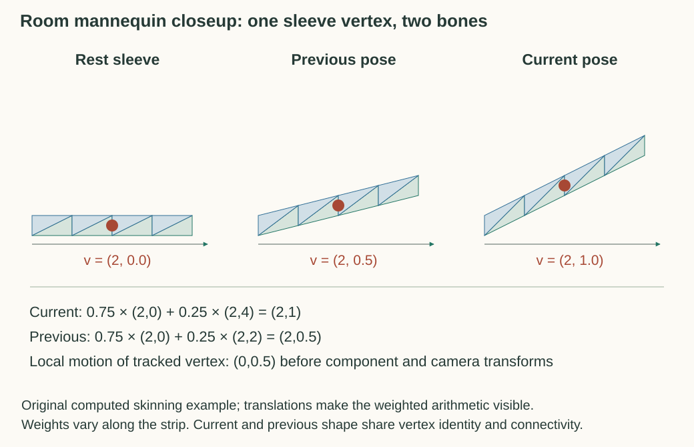
SK_Mannequin, posed by ThirdPersonWalk. Its invented two-bone weights do not reproduce the asset’s stored bone influences or its captured poses at 0.10 s and 0.45 s. The red vertex is the prose’s 0.75/0.25 example. Its two current transformed positions are (2,0) and (2,4), so the result is (2,1); the previous pose instead used (2,2) for the second result, producing (2,0.5). The strip is actually computed with weights varying along its length. This is an illustrative software deformation using simple bone translations, not an Unreal skeletal-mesh capture. Its retained previous result is the information motion reconstruction needs. Open diagram at full size.A morph changes the input shape through weighted deltas, while cloth or a deformer can supply another position result. The engine has to define the ordering and source of these operations for a particular path. “Animation” is therefore not one field in the scene record. It is a process that produces geometry state and sometimes bounds, with explicit resources and frame dependencies. Unreal's skeletal rendering interfaces distinguish current and previous bone data and expose morph updates. A skin cache can materialize deformed results for reuse by consumers, rather than forcing every pass to repeat all deformation work. The relevant interfaces begin in SkeletalRenderPublic.h.
The room mannequin’s deformation handoff
| Type | Information or operation it provides | Use and lifetime |
|---|---|---|
USkinnedMeshComponent | Component-space pose access through GetComponentSpaceTransforms(), previous transform storage, and a MeshObject reference. | The character has a pose inside the mesh in addition to the component’s placement in the room. |
FSkeletalMeshObject | Update() accepts dynamic mesh/morph data and a previous-bone-update policy; geometry paths expose GetSkinVertexFactory() and reference-to-local matrices. | Carry rendering-facing deformation data into the supported skinning path. Matrix views returned from dynamic data must not be retained across frames. |
Source for these selected fields and contracts: SkinnedMeshComponent.h, SkinnedMeshComponent.h, SkeletalRenderPublic.h.
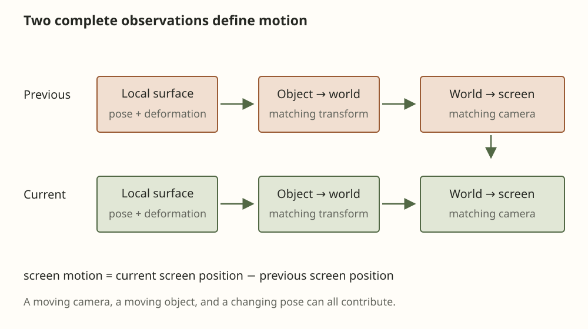
Why retain the previous state? Temporal antialiasing, temporal upscaling, motion blur, and temporal lighting filters need to connect this frame's surface sample to the prior frame. A motion vector describes how a surface point moved on screen. It depends on the current and previous object transforms, deformation states, and camera transforms. A stationary door can have nonzero screen motion when the camera moves. A sleeve on the mannequin can move while its component transform stays constant. Storing only an actor velocity cannot describe either case fully.
Bounds must follow the same physical reality. If the character's hand extends beyond a reference-pose box, a culling system using that box may remove visible geometry. If wind displacement moves a leaf beyond its advertised bounds, the leaf can disappear near the edge of a view or cast an incomplete shadow. Excessively enlarged bounds avoid some missing geometry but make culling less effective and may increase shadow work. Bounds are thus both a correctness contract and a performance parameter. Unreal updates primitive bounds during transform propagation, while specialized geometry paths must account for their own deformation.
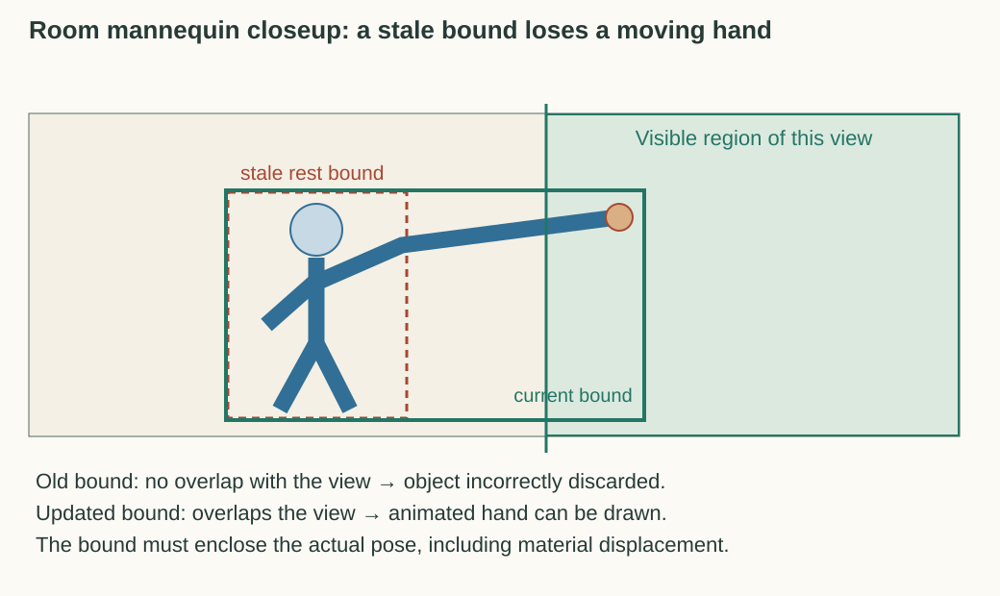
Large worlds add precision to the representation problem. As a precision test, translate the entire room far from the world origin while preserving every relative placement. A local vertex can retain fine detail near its asset origin while an object’s world position has a very large magnitude. Converting everything to one ordinary single-precision world-space buffer too early loses that advantage. Unreal's large-world rendering code uses representations and relative-coordinate techniques suited to the particular stage; the instance shader types include double-float matrix forms. Arda does not need to copy every encoding immediately, but it should define coordinate spaces at interfaces and avoid making an unexamined global float transform the only possible representation.
The same principles apply to a teleport. The object changes location, but preserving a long motion vector from its old location can smear history across the screen. A spawn has no meaningful previous observation; a camera cut invalidates view history; a topology change may break correspondence between vertices. A scene update needs a way to express discontinuity and history validity, rather than relying on every downstream temporal effect to infer it. The proposal for Arda will treat previous state and invalidation as part of the scene contract from the beginning.
Add the door, plants, and mannequin—and follow their state
The baseline established asset sharing with seven simple cube components. Now keep those seven placements and the ceiling RectLight, and add the objects whose contracts we have just derived. This is an actual extension of the saved room, stored as /Game/Labs/SceneRepresentationRoom. The original /Game/Labs/LumenRoom remains the baseline for the material-buffer and Lumen experiments. The exported inventory, camera and pose report, and asset and source provenance record this experiment. Runtime object paths retain the loaded baseline package name; the extension is saved separately. All new screenshots are 1280 × 720 with fixed exposure EV100 = 4; they preserve the renderer’s stochastic lighting noise.
The new actors have distinct jobs. A door and its attached indicator demonstrate inherited rigid motion. Three small plants demonstrate shared meshes with many instance transforms. A template mannequin demonstrates a changing skeletal pose inside one component. The following captures use Unreal's renderer; the plant silhouettes, attachment, and animation are implemented in components rather than painted into a diagram.
The extension's components and the information each supplies
| Room object | Actual representation | What changes independently |
|---|---|---|
| Original walls and blocks | Seven UStaticMeshComponent placements of the shared built-in cube. | Their mesh references, locations, and scales remain the baseline values. Adding the other actors does not duplicate their geometry assets. |
| Door and indicator | Two static-mesh components attached to the same movable hinge root. The indicator has an emissive surface material, not a ULightComponent. | The hinge's yaw changes the resolved world placement of both components. Their geometry remains rigid; emission and material parameters are separate from attachment. |
| Three plant pots | One UInstancedStaticMeshComponent with three transforms. | One pot can move while the other two retain their placement and all three share the same mesh and material. |
| Stems and leaves | Two further instanced components: three stems and twenty-four leaf cards. Leaves use a masked, two-sided foliage material. | Stem/leaf transforms and coverage differ from the pot geometry. Each leaf is an instance, not a separate actor or component. |
| Mannequin | A USkeletalMeshComponent on a SkeletalMeshActor, with the 68-bone SK_Mannequin asset and ThirdPersonWalk animation from the installed Unreal template. | The sampled pose changes vertex deformation while the component's room placement stays fixed. The skeleton is inside this representation, not an attachment tree of independent mesh actors. |
Count at the right level. The additions use three instanced components, two door-assembly mesh components, and one skeletal mesh component. The three instanced components contain thirty placements in total: three pots, three stems, and twenty-four leaves. That is six added primitive-bearing components, not thirty-six actors and not a measured draw count. Sections, passes, culling, and renderer-specific paths determine the work that eventually reaches the GPU. The earlier twelve-tile accounting exercise was a deliberately controlled submission plan; it is not an estimate of this captured frame.
One set of leaf buffers, twenty-four placements
The plants sit at UE X = −145, −105, and −65 cm, with Y = 80 cm, near the open front of the room. The detail camera below moves closer to them; the overview camera above stays fixed. The broad leaf outline comes from the material's opacity mask on a card. The wireframe reveals the triangles that supply that mask's sampling domain. A mask can remove covered samples from a rectangle without introducing additional silhouette vertices into its underlying mesh.
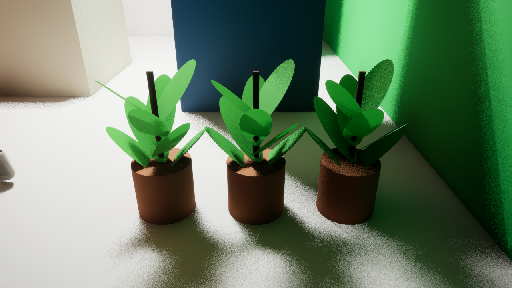
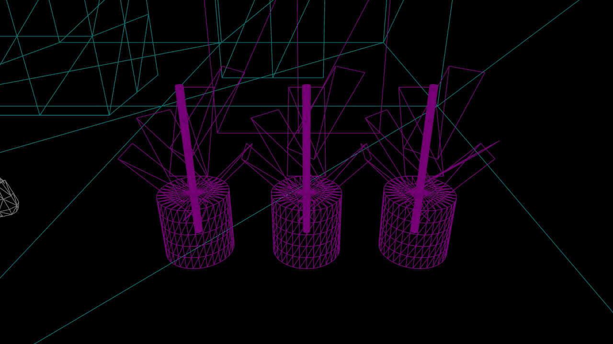
This is the concrete meaning of the GPU Scene example with three pot placements. Shared primitive-level state identifies compatible geometry and policy; instance-level records identify the individual placements. The illustrative indices 17 and 400–402 in the earlier diagram explain addressing. They were not extracted from this capture's private GPU allocations. The actual instance counts and transforms are exported instead, so the explanation never relies on guessing those indices.
Move the hinge; keep the door mesh
The hinge is at (−150,200,0) cm. A 100 cm wide, 200 cm high door starts along +X and rotates through +90° yaw toward +Y. Its six-centimeter thickness clears the baseline blocks. The indicator starts at hinge-relative (60,0,150), so its center travels from (−90,200,150) to (−150,260,150). Compare these values with the earlier attachment diagram: the computed example and the captured hierarchy now describe the same object.
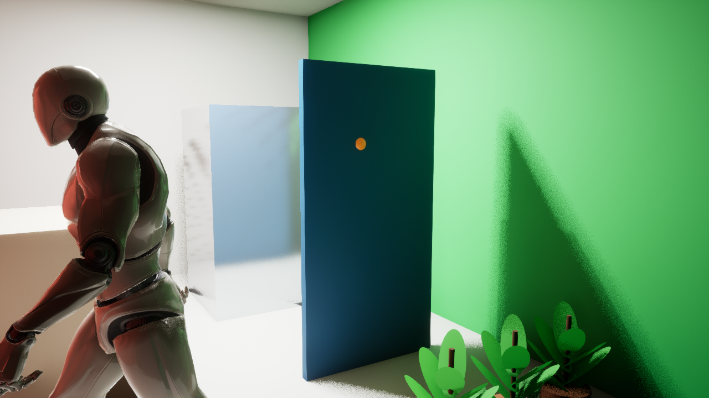
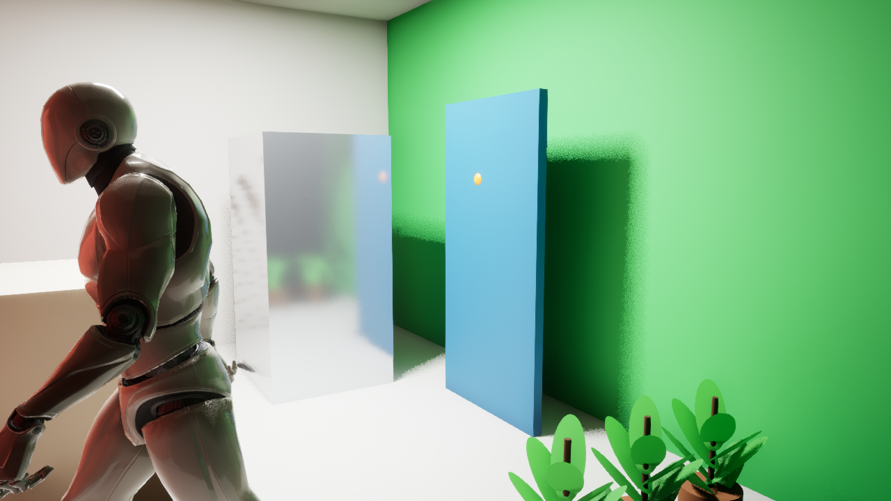
At the scene boundary, this edit is a transform change with consequences for bounds, current/previous placement, visibility, and supported secondary representations. It is not a request to rewrite the door's indices. The emissive indicator may contribute through supported lighting paths, but its presence creates no additional point or rect light component. Adding such a component would be a separate scene-service contribution, as the light chapter explains.
Change a pose inside one placed object
The mannequin stands at (65,110,0) cm, in front of the matte block. The two images below evaluate ThirdPersonWalk at 0.10 s and 0.45 s, keeping the actor at the same location and −90° yaw. We can therefore isolate a deformation update from a rigid placement update. The template mesh and animation are actual Unreal assets; the two-bone sleeve strip earlier in the essay is a small arithmetic model of the same kind of operation, not a claim about this asset's particular weights.
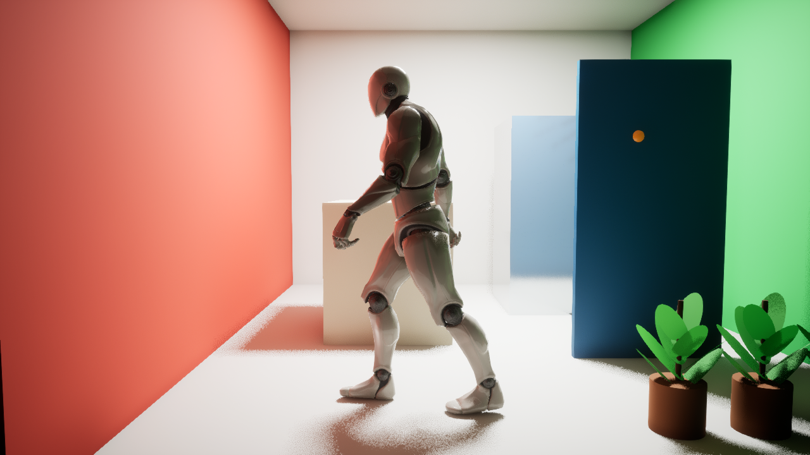
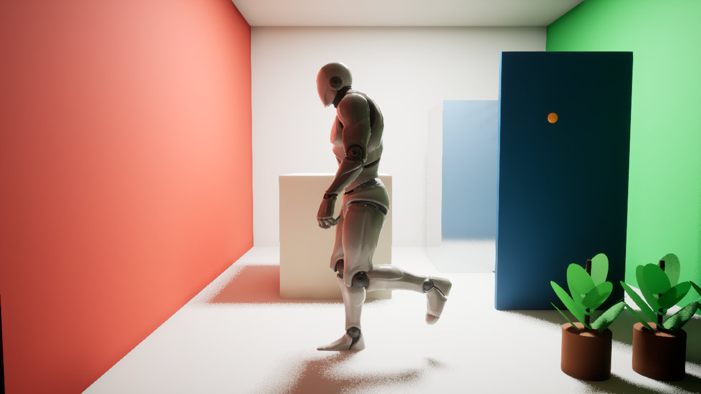
A real-time implementation must retain a coherent previous pose and placement when it emits motion. It must also supply bounds that enclose the deformed surface and negotiate which shadow and ray paths can consume that geometry. Merely seeing the mannequin in a lit image does not establish that software distance fields or a particular GI cache represent its moving triangles. The baseline distance-field and card captures later in the essay remain explicitly about the seven rigid cube components.
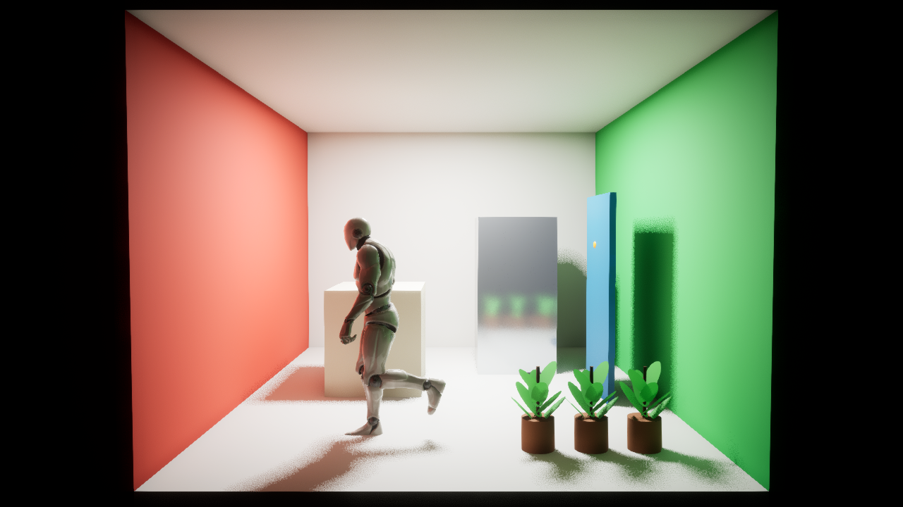
Inspect the extended scene without its final lighting
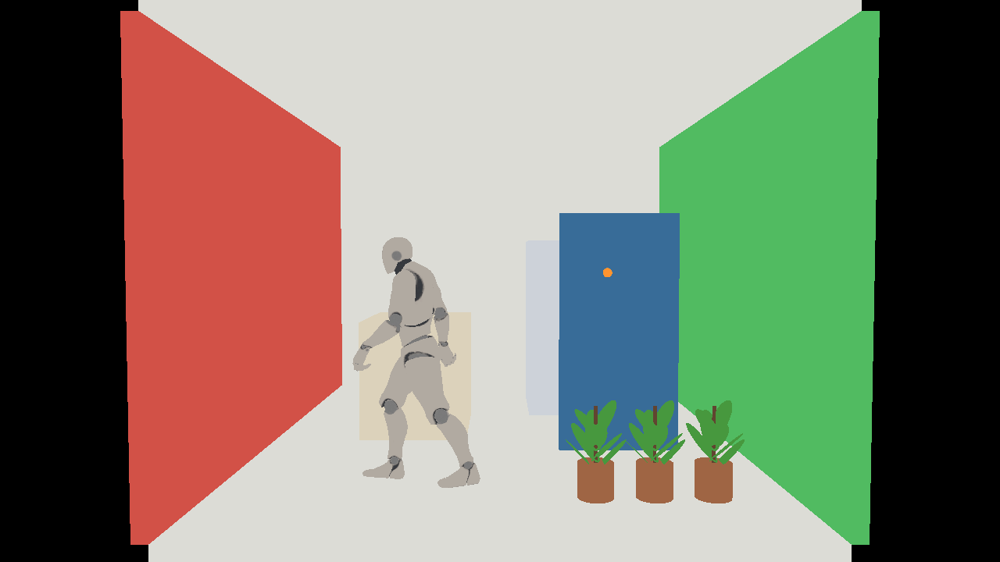
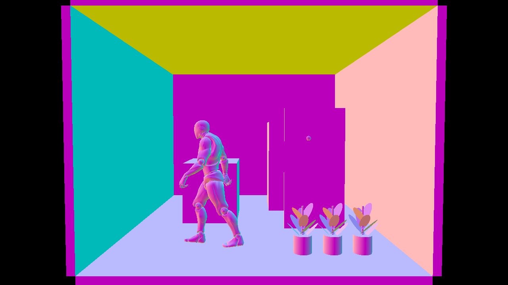
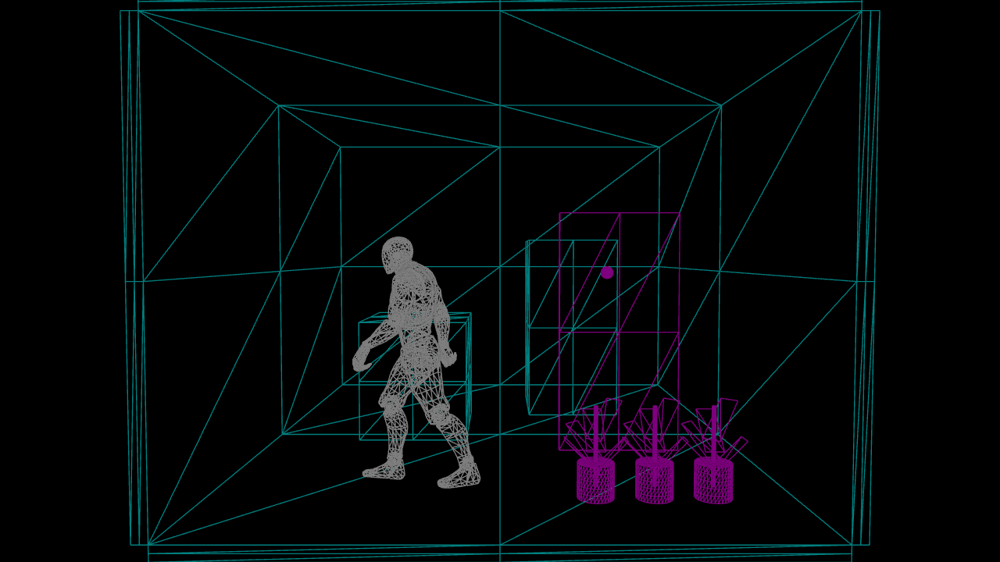
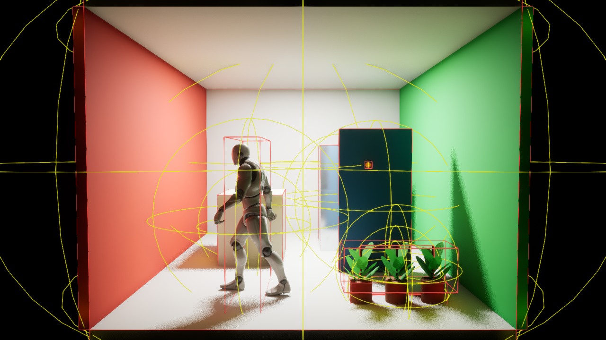
We have now used the same room to distinguish asset sharing, component registration, instance placement, attachment, deformation, surface inputs, and conservative extent. The next chapters return to its baseline material and lighting comparisons. The compatibility fixtures at the end extend this room's test vocabulary—heightfields, mutable topology, particles, hair, scans, and volumes—without pretending that all those providers are already implemented by the six additions above.
A material is a surface program
The captured room begins with constant surface parameters: neutral walls and floor, a rough matte block, and a smooth metallic block. To understand a more general surface program, replace our teaching floor patch with a textured ceramic tile. Its proposed graph samples a color texture, a normal map, and a roughness texture, and can blend wear through a painted mask. This is a material variant of the same floor location; it is not present in the baseline captures. The graph computes surface properties. It does not contain the final color of the tile, which also depends on illumination, shadows, reflections, the camera, and exposure.
A useful conceptual function is surface = Material(geometry inputs, parameters, textures). Geometry inputs include position, normal, tangent frame, UVs, vertex colors, and optional instance data. Parameters include a tint or roughness multiplier. The output describes how the surface interacts with light: base color, roughness, metallic behavior, emission, and the other properties allowed by the chosen material model. A bidirectional reflectance distribution function, usually abbreviated BRDF, describes the directional response of a surface to incoming light. The material supplies the values and model needed to evaluate that response.
For example, the ceramic tile can sample a texture value (0.4,0.3,0.2) and multiply it by a tint (0.8,1.0,0.8), producing (0.32,0.30,0.16) in the example's working color space. That value is still a surface color parameter, not the final pixel. A white light illuminating it from above and a red light at grazing incidence can produce different outgoing radiance. The normal map changes the local shading orientation, while the underlying triangle remains flat unless another mechanism changes geometry. This separation explains how a surface can appear detailed without adding silhouette detail.
Unreal distinguishes the authored material, its compiled rendering resources, and the render proxy through which parameters and resources are accessed. UMaterial and material-instance objects belong to the authoring-facing world. FMaterial and FMaterialResource participate in the compiled rendering side. FMaterialRenderProxy supplies the renderer-facing material access and maintains uniform-expression caches. A mesh batch refers to a material render proxy, rather than executing a material graph by walking editor nodes for every pixel. The resource types are in MaterialShared.h, and the proxy and caches are in MaterialRenderProxy.h.
Material types: authored choices, compiled behavior and bound values
| Type | Information it provides | Use in the room |
|---|---|---|
UMaterial | Authored material/expression data and settings such as MaterialDomain and BlendMode. | Define the ceramic-tile computation and whether it describes an opaque surface or another domain/path. |
UMaterialInstance | Parent plus scalar, vector and texture parameter overrides; static parameters can select compiled variants. | Keep one parent material while tinting one tile or selecting a different texture. |
FMaterial | Compiled-material interface: domain, blending and shading-model queries, shader maps and compilation/rendering resources. | Let pass selection ask which shading behavior and shader variants the tile material supports. |
FMaterialResource | A concrete FMaterial implementation for material/material-instance resources and their feature/quality configuration. | Represent the compiled tile resource for the rendering configuration; it is not a placed scene object. |
FMaterialRenderProxy | GetMaterialWithFallback(), parameter lookup and UniformExpressionCache. | A mesh batch resolves a usable compiled material and the current values needed to bind it. |
FUniformExpressionCache | Material uniform buffers, allocated virtual-texture references, parameter-collection IDs and the shader-map identity used for the cache. | Reuse uniform evaluation and bindings for the tile. Changing parameters may invalidate this cache without changing the tile mesh. |
Source for these selected fields and contracts: Material.h, MaterialInstance.h, MaterialInstance.h, MaterialShared.h, MaterialShared.h, MaterialRenderProxy.h.
Material instances reuse a parent material while changing selected parameters. Ten tiles can share one compiled surface program and use different tint values or texture bindings. A dynamic material instance lets gameplay change appropriate runtime parameters. Static switches are different: they affect which code is compiled and can create distinct shader variants. Confusing these categories leads to poor architecture. A runtime color change should not require regenerating geometry, while a change that selects a different compiled branch cannot always be represented by overwriting one float.
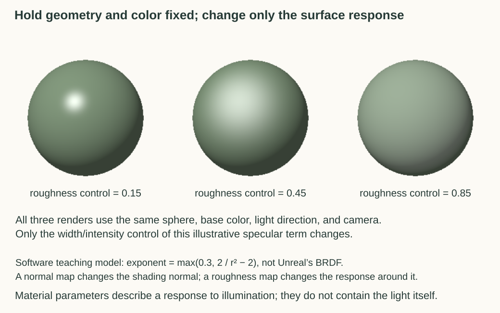
Material slots connect a mesh's sections to its appearance. Suppose the proposed indoor basin has section zero for ceramic and section one for brass. The asset supplies default materials, while a placed component can override them. Neither arrangement requires embedding a complete material program into each vertex. Section data selects a material binding; vertex data supplies the geometric inputs that the chosen program consumes. The same brass material may appear on the door handle and the basin drain despite their geometry coming from different assets.
Material domains and blending choices also affect where work belongs. An opaque surface can contribute a nearest visible surface and usually write depth. A masked material either accepts or rejects a covered sample based on an opacity threshold, as demonstrated by the room’s captured leaf cards. A translucent material requires compositing contributions through or over other surfaces. A volume-domain material describes participating matter rather than a thin boundary. A decal modifies the appearance of another surface, and a post-process material operates on image-space inputs. Treating all of these as interchangeable “materials on a triangle” would hide essential renderer contracts.
Vertex displacement crosses the boundary between appearance and geometry. Unreal's world-position-offset material logic can move vertices, such as making leaves sway. The program is authored as material behavior, but the consequences include bounds, shadows, previous positions, and ray-tracing compatibility. A material system must therefore report relevant capabilities to the geometry and pass systems. Opacity masking has a similar effect on coverage. The pass processor cannot choose a cheap opaque depth shader if the material's holes determine which samples exist.
Unreal also supports richer material representations such as Substrate, so the familiar list of base color, metallic, and roughness should be understood as an accessible starting model rather than a permanent complete schema for every shading path. The architectural requirement is broader: the renderer and material compiler agree on a surface representation, the allowed operations, and the consumers that can evaluate or store it. A modular scene system should refer to a material program and its binding data while allowing that representation to evolve. It should not hard-code the editor's node graph into every geometry provider.
A visible surface becomes a lit pixel
Return to the baseline room and its ceiling RectLight. The light has a world position, a color, an intensity, and a spatial shape describing where it sends light. These properties belong to the light, while the floor’s roughness and color belong to the surface. Keeping them separate is what lets one light illuminate many materials and one material respond to many lights. In Unreal, light components create renderer-facing light state, analogous in purpose to the primitive handoff but using light-specific types. FLightSceneProxy provides rendering properties and specialized behavior for lights. The integration begins in LightComponent.cpp and LightSceneProxy.h.
The light has its own proxy and scene-info record
| Information | Concrete Unreal data or operation | Use in the room |
|---|---|---|
FLightSceneProxy: light properties | LightToWorld, position/color getters, light-type-specific radius/source-shape queries and shadow policy. | Describe where the light sends light and how the renderer should handle its supported shadow behavior. |
FLightSceneProxy: specialized operations | Virtual light-parameter and shadow-initializer operations supplied by concrete light types. | A point light and a directional light share scene integration while producing different lighting/shadow work. |
FLightSceneInfo: scene membership | Proxy, Id, Scene, OctreeId, interaction-list heads and precomputed-lighting validity state. | Integrate the light with renderer lookup and applicable light/primitive interactions. It does not store every object’s final illumination. |
Source for these selected fields and contracts: LightSceneProxy.h, LightSceneInfo.h.
A directional light approximates a distant source whose incoming direction is effectively shared across the scene. A point light emits around a position. A spot light restricts emission to a cone. A rect light describes an area-shaped source with the implementation's supported approximations. A sky light represents environmental illumination rather than an ordinary local bulb. Their shadowing and performance characteristics differ. The common requirement is that the renderer can obtain the incident-light direction and contribution relevant to a surface point, then evaluate the material's response.
To make that point concrete, suppose the tile faces upward and the light lies above it. A diffuse response includes the cosine between the surface normal and the incoming-light direction. If the normal and direction align, the cosine factor is one; if the light grazes the tile at sixty degrees from the normal, it is one half. A rough dielectric surface also has a specular response determined by its material model. Distance attenuation and the light's intensity affect the arriving illumination. These computations evaluate lighting; sampling the tile texture evaluates the surface. A deferred renderer separates much of that work.
Rasterization first answers a geometric question: which projected triangles cover each sample? Depth testing determines which accepted surface is closest for an opaque view. Interpolation supplies values such as UVs and normals at the covered sample. The material then evaluates the visible surface's properties. In a conventional deferred path, those properties are encoded in several screen-sized render targets collectively called the GBuffer, short for geometry buffer. Depth is typically stored separately and can help reconstruct position. The buffers contain a description suitable for later lighting, not a complete copy of the original mesh.
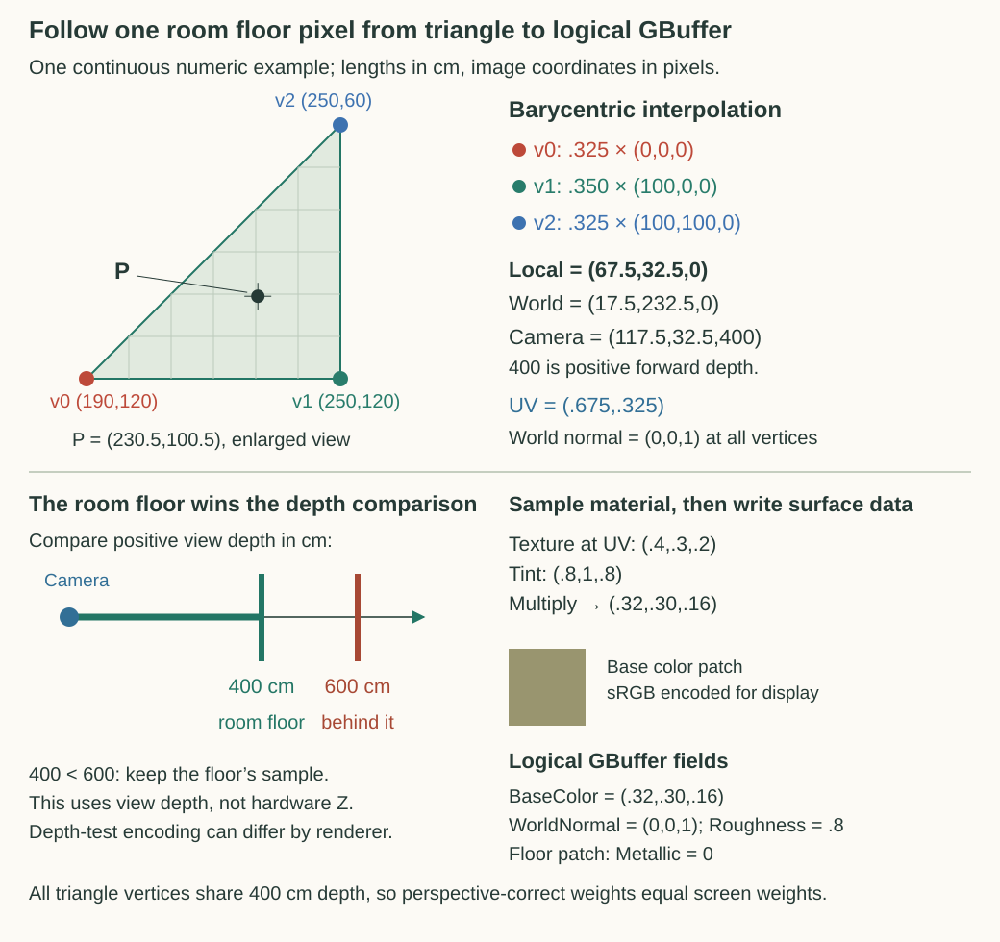
Unreal's FGBufferData exposes a logical decoded representation with fields such as world normal, base color, metallic, roughness, shading-model identity, and other data used by supported shading paths. The actual texture packing depends on configuration and feature choices; the logical structure is not a declaration that every field occupies a separate full-precision texture. This distinction is important when extending a renderer: the surface contract and the storage encoding are related but separate designs. The decoded structure is in DeferredShadingCommon.ush.
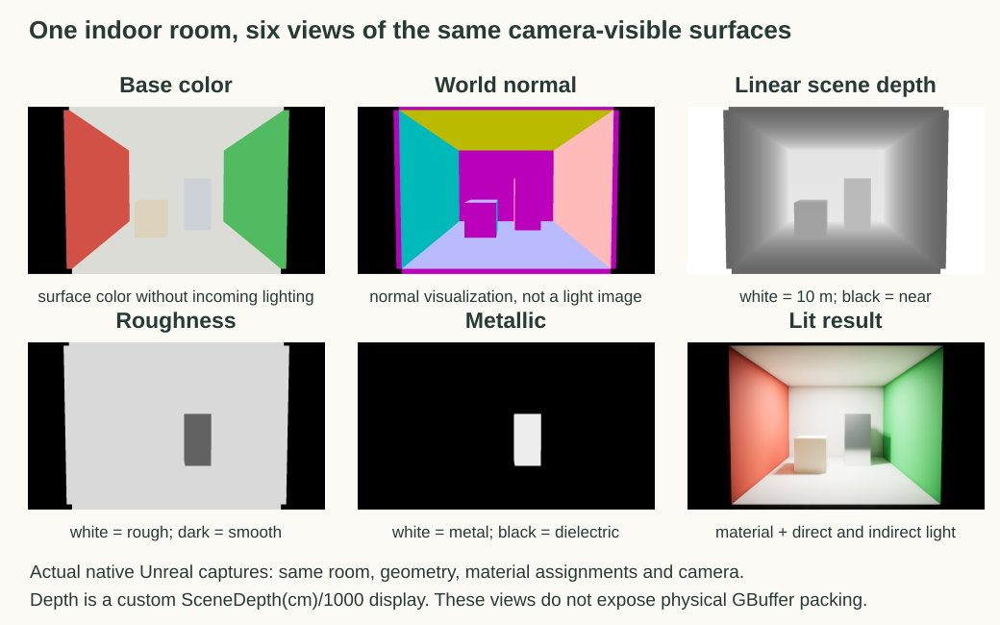
FGBufferData: decoded surface information for one sample
| Information | Concrete Unreal data or operation | Use in the room |
|---|---|---|
| Surface orientation | WorldNormal and, for supported paths, other orientation data. | The lighting calculation knows which way this floor sample faces. |
| Reflectance parameters | BaseColor, Metallic, Specular and Roughness. | Distinguish the rough matte block from the smoother metallic block at the same illumination. |
| Model selection and extensions | ShadingModelID and CustomData with model-dependent meaning. | Choose how to interpret extra surface information and evaluate the supported lighting response. |
| Depth and ancillary data | Depth, custom-depth/stencil-related values and other decoded inputs. | Locate or classify the visible sample alongside its material properties. |
Source for these selected fields and contracts: DeferredShadingCommon.ush.
This is a shader-side value for a surface sample, not a persistent per-object record. It is also not a universal storage schema for every rendering mode: translucent and richer material paths can require other contracts, and decoded values need not each occupy their own GBuffer texture.
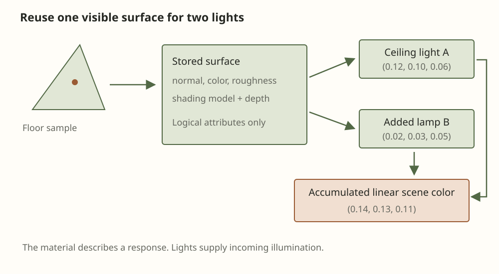
As another explicit room variant, attach a point light to the door’s indicator; the captured indicator itself is only a mesh. Now the floor has a second light to evaluate. The tile texture generally does not need to be sampled from scratch once per light in the deferred opaque lighting stage. The renderer reads the stored surface attributes, evaluates the second light, and adds its contribution. For an illustrative pixel, the first light might contribute (0.12,0.10,0.06) and the second (0.02,0.03,0.05) in linear scene-referred RGB, giving (0.14,0.13,0.11) before other illumination and processing. These are invented values to show accumulation. Lighting is not performed by multiplying already tone-mapped display colors.
The approach has costs. Multiple render targets consume memory bandwidth, and a fixed encoding limits which surface information can be retained. A one-layer nearest-surface description cannot by itself represent arbitrary stacks of transparent surfaces. Specialized shading models may need additional data or passes. The reason to use deferred shading is therefore not that it is universally simpler. It makes a particular tradeoff: spend bandwidth on a reusable description of visible surfaces, then organize lighting largely independently of the original geometry submissions.
Shadows add another visibility question. The light illuminates a point only if the relevant path to the source is unobstructed, subject to the chosen shadow approximation. A shadow map renders depth from a light-related view and compares the shaded point against that stored depth. Unreal also has Virtual Shadow Maps and ray-traced shadow paths under appropriate configurations. A tight camera aimed at the floor can exclude the matte block while that block still obstructs the ceiling light. Main-view culling must therefore not erase the block from the persistent scene merely because it is not directly visible. Shadow consumers decide their own relevant work.
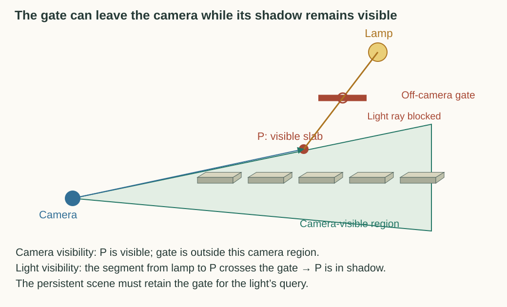
Opacity and deformation must agree across those consumers. A masked leaf casts a cutout shadow only if the shadow path evaluates its coverage correctly. A wind-deformed planter leaf casts a convincing shadow only if the shadow geometry represents the appropriate deformation. The exact performance compromise can vary with distance or quality settings, but the system needs a declared relationship between the representations. This is another reason to keep material requirements, geometry capabilities, and scene updates explicit rather than burying them inside one main-view draw callback.
The proposed basin spray demonstrates the limits of one opaque surface record. A translucent droplet or smoke sprite contributes through a compositing operation that depends on what is behind it. Such work often follows separate lighting and compositing paths, with sorting and order-independent techniques available for particular cases. Hair strands and participating volumes introduce their own visibility and accumulation. Deferred decals can modify receiving surfaces through decal-specific buffers or later operations. Post-processing then consumes rendered images to implement effects such as bloom, depth of field, exposure, and tone mapping. These are consumers and transformations of scene results, not extra geometry attributes that should be copied into every primitive.
The actual Unreal frame is more involved than a straight list of “geometry, lights, transparency.” The deferred renderer interleaves preparation, shadow work, surface rendering, indirect illumination, reflections, specialized effects, and post-processing, with dependencies and optional paths. FDeferredShadingSceneRenderer::Render shows calls for the base pass, diffuse indirect lighting, lights, translucency, and hair-related lighting. Its render graph describes resource access so work can be scheduled safely. We use a simplified sequence to explain causality; the implementation is a graph of dependent work rather than a fixed textbook conveyor belt. See the base-pass scheduling, lighting work, and translucency work in DeferredShadingRenderer.cpp.
Inspect the surface separately from its illumination
To reproduce the distinction, open the saved /Game/Labs/LumenRoom baseline and keep its camera fixed. Inspect the matte block and the floor: they already have simple opaque materials with constant roughness and no world-position offset. In the viewport's View Mode menu, open Buffer Visualization and inspect Base Color, World Normal, Roughness, and Scene Depth one at a time. The exact labels are registered in the engine visualization configuration. These modes expose different intermediate values at the same visible surface rather than four alternative final looks.
Change the ceiling RectLight’s intensity and color while keeping the geometry and camera fixed. The Lit result should change as illumination changes; the simple material's Base Color and Roughness should not change merely because the light moved. Rotate the matte block in a separate experiment, and the World Normal view should change orientation. Then use viewmode wireframe on this conventional mesh to inspect its edges and viewmode lit to return. These commands are documented in Viewport Modes. The experiment gives a practical debugging fork: incorrect Base Color points toward material inputs; correct surface data with unexpected Lit output points toward lighting, visibility, or later processing.
For a bounds check, open the extension map /Game/Labs/SceneRepresentationRoom, enable Show → Advanced → Bounds in the editor viewport, and inspect the room mannequin while changing its pose or its advertised bounds. Bounds is a registered advanced show flag. A visible surface outside its bound is a correctness warning; a very large bound enclosing a small surface explains why culling may be ineffective. This is an observation exercise rather than a demand to reduce every bound aggressively: the bound must still enclose the geometry in all supported poses.
Separate the room's surfaces from the light they reflect
Return from the extension to the baseline’s seven components. They produce several useful per-pixel descriptions. First examine base color. It answers what material property the winning surface supplies, before indirect illumination makes the neutral floor appear tinted. The red wall's material and the red light reflected onto the floor are different quantities. The floor keeps its neutral base color even where its final lit appearance becomes red. This is the concrete reason deferred rendering separates surface evaluation from lighting evaluation.
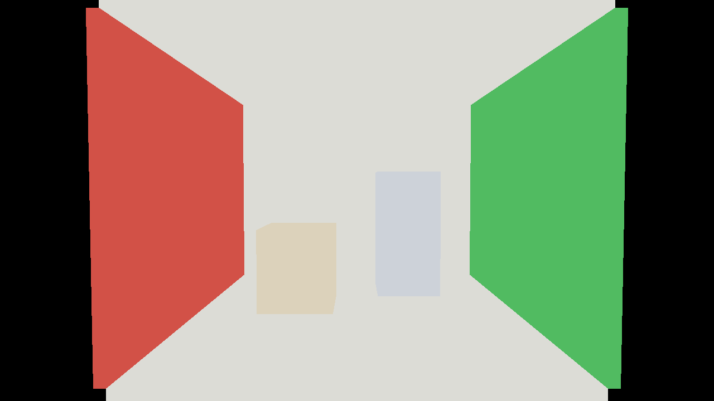
BaseColor buffer visualization. The room uses five constant-parameter material assets; this is a measured render of their surface outputs. Open image at full size.The world-normal view answers a different question: which way does the visible surface face? Identical materials on the floor and back wall do not imply identical illumination, because their normals differ. Under nonuniform scale, transform normals with the inverse transpose of the linear transform and normalize them. The derivation follows from perpendicularity. For a tangent , . After transforming the tangent to , choose , giving . Multiplying a normal by as if it were a position does not preserve this relation for general nonuniform scale.
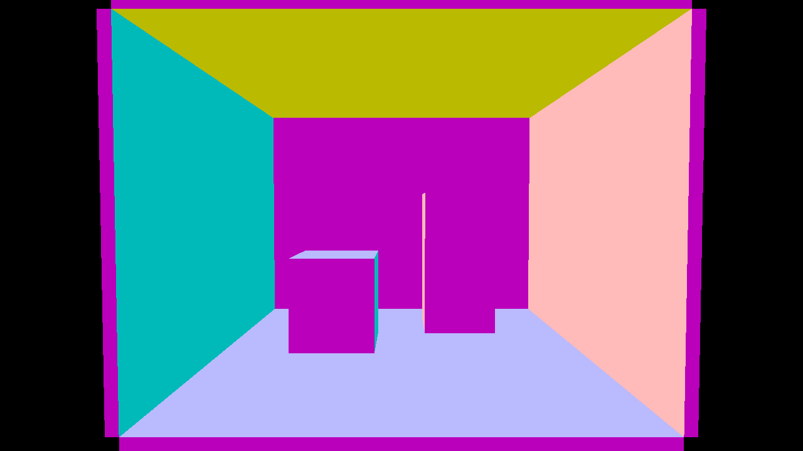
WorldNormal visualization. Colors encode directions; they are not the base colors of the materials. Open image at full size.The matte block uses roughness 0.7 and metallic 0; the glossy block uses roughness 0.12 and metallic 0.85. Roughness changes the distribution of reflection directions, while metallic changes how base color and reflectance participate in the shading model. These values are shader inputs, not labels such as “reflective object” stored on the actor. A low-roughness surface requires sharper directional information from the reflection system than a rough diffuse surface does.
Roughness buffer visualization. The material script sets the glossy block to 0.12 and the remaining surfaces to 0.7. Open image at full size.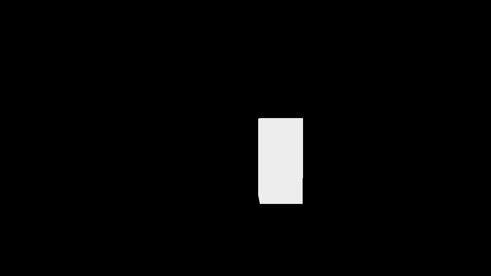
Metallic buffer visualization. The glossy block's value is 0.85; the other visible mesh materials use zero. Open image at full size.These views are selections of shading inputs, not an exhaustive description of the engine's packed GBuffer layout. The layout can depend on material features and renderer settings. What survives those implementation choices is the contract: visible-surface evaluation makes material properties available, and lighting uses them with positions, normals, light data, shadows, and indirect-light estimates. The light component is not another material slot on each wall. It contributes illumination to relevant receivers through renderer light data and lighting passes.
The ceiling light in this capture is a movable RectLightComponent with 2,400 lumens, source width 130 cm, source height 120 cm, and attenuation radius 2,000 cm. It is placed at (0,270,298) cm and points downward. Exposure is held fixed for the capture sequence. These settings make the experiment reproducible, but the image is not a radiometric comparison with the CPU lab: the reduced renderer uses its own normalized radiance units, while Unreal applies its light-unit conventions, shading, reconstruction, exposure, and display pipeline.
The camera does not see the whole lighting problem
The ceiling area light reaches the floor directly. The floor also receives light that first struck the room’s red wall. That second contribution is indirect illumination: the direction and color of arriving light depend on other surfaces. The glossy block reflects parts of the room outside the camera’s first-hit image. Both effects ask questions that the nearest visible surface at each screen pixel cannot fully answer. This is where the persistent scene and the GBuffer must be kept conceptually separate. The GBuffer describes what this camera currently sees; the scene describes the world that other visibility and lighting queries may need.
A screen-space trace can search depth and other buffers to find a candidate intersection along a projected ray. It is attractive because those buffers already exist and match the visible rasterized geometry closely. But if the red wall is outside the image, its samples are absent. The same problem occurs for surfaces hidden behind the first depth layer. A purely screen-space method cannot recover information that was never stored. Temporal reuse can improve stability and coverage over time, but it does not turn one current image into a complete three-dimensional world.
Hardware ray tracing uses acceleration structures to make three-dimensional intersection queries efficient. A bottom-level acceleration structure, or BLAS, organizes the geometry of an object or geometry group. A top-level acceleration structure, or TLAS, organizes placed instances with their transforms. This resembles the asset-versus-placement distinction with which we began, now specialized for ray traversal. Moving a rigid door can change an instance transform while reusing its local geometry structure. Deforming a character can require updating or rebuilding geometry data as well. Unreal's ray-tracing scene implementation manages instance data and top-level builds in RayTracingScene.cpp.
A ray intersection is only part of a lighting answer. It tells us that a ray met some geometry at a distance, with information identifying the hit. We still need a surface response and an estimate of illumination at that location. Evaluating the full original material and tracing enough additional rays for every query can be too expensive for a real-time budget. A lighting system therefore chooses representations and caches appropriate to the question. This does not make the cached answer identical to the full path-traced solution; it makes the approximation explicit and affordable.
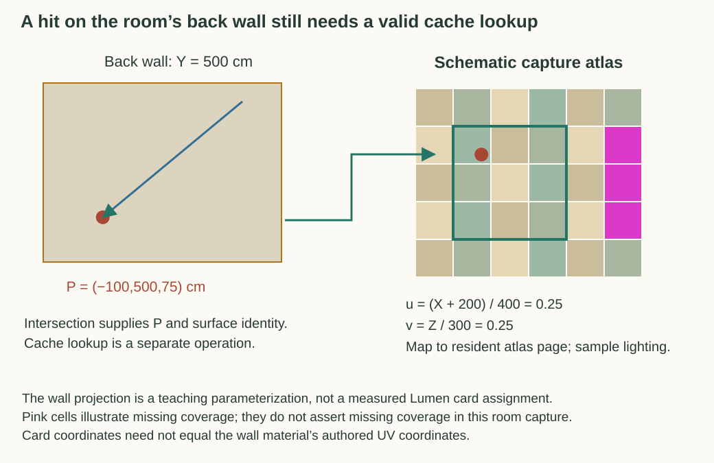
Lumen uses a combination of tracing and lighting representations. Depending on configuration, it can combine screen traces with software tracing through distance-field representations or hardware ray tracing. A signed distance field stores an estimate of distance to a surface throughout space, allowing a ray to advance according to distance estimates instead of testing all triangles. This representation has its own resolution and shape limitations. Hardware tracing addresses a different geometry representation and has its own update costs. Neither path should be described as “just read the GBuffer for everything.” Epic's Lumen Technical Details explains the configurable tracing paths and their limitations.
Lumen's Surface Cache captures material-related surface information using parameterizations associated with mesh cards, then maintains lighting information useful to indirect queries. A card is an oriented capture representation of part of a surface, not a replacement gameplay object and not simply the final camera GBuffer saved forever. Coverage matters: an interior corner or poorly represented region can have different behavior from a simple exterior wall. The renderer must also respond when the object, its material, or the lighting changes. FLumenSceneData maintains specialized scene data alongside the ordinary renderer scene; its declaration is in LumenSceneData.h.
FLumenSceneData: a maintained representation for indirect-lighting queries
| Information | Concrete Unreal data or operation | Use in the room |
|---|---|---|
| Scene-to-representation mapping | PrimitiveGroups, MeshCards, Cards, heightfields and an instance-to-mesh-cards index buffer. | Connect room objects to supported surface-capture representations, including geometry outside the camera image. |
| Captured surface data | AlbedoAtlas, NormalAtlas, EmissiveAtlas and DepthAtlas. | Retain material/shape samples from card captures; these are not the player camera’s current GBuffer. |
| Computed lighting | DirectLightingAtlas, IndirectLightingAtlas, FinalLightingAtlas and radiosity/history resources. | Update reusable lighting information separately from the stored surface properties. |
| Residency and requests | PageTable, GPU buffers and SurfaceCacheFeedback. | Track which surface-cache regions exist and which need attention within the available budget. |
| Change propagation | PendingAddOperations, PendingUpdateOperations, PendingSurfaceCacheInvalidationOperations and pending removals. | Moving the door or changing an emissive material must update dependent representations; scene membership alone does not guarantee current cached lighting. |
Source for these selected fields and contracts: LumenSceneData.h.
The progression is now concrete: a component authors a change, its rendering representation exposes usable state, scene records organize it, and specialized consumers maintain derived data. The tables identify the information at each boundary; the surrounding walkthrough explains why that boundary exists.
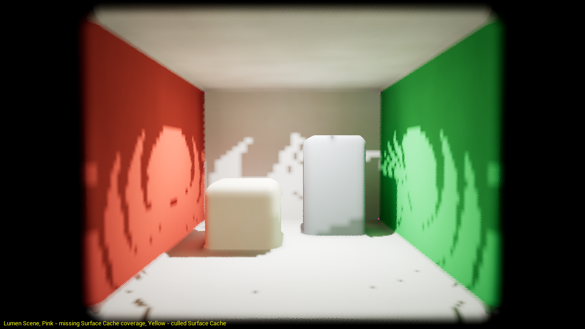
Follow one indirect-light sample in the room conceptually. A visible floor sample provides a position and surface orientation. A lighting algorithm selects an incoming direction to investigate. A trace finds the red wall, perhaps through a representation other than the main-view triangles. A lighting lookup or hit evaluation estimates the radiance returning from that wall. The floor material’s response weights the arriving light, and temporal or spatial filtering stabilizes the estimate under the available sample budget. The exact Lumen pipeline is more sophisticated, but each step now has an understandable responsibility: find a surface, know its appearance and illumination, transport a contribution, and control sampling noise.
This is also why “the object is visible” does not establish that it participates correctly in GI. A procedural mesh can be rasterized by a custom proxy without supplying the representation a particular software tracing path needs. A volume or particle effect may use a separate lighting solution. Material displacement can differ from a fallback ray geometry. Nanite can render extremely detailed visible geometry while another consumer uses a selected fallback or supported specialized ray representation. Compatibility must be tested per consumer and configuration. A scene architecture should represent missing capabilities explicitly, not assume that successful main-view rendering proves universal support.
Unreal's static mesh LOD resources themselves reveal the coexistence of representations: alongside sections and mesh resources are references for distance-field data, card-representation data, and ray-tracing geometry. Those fields may be absent when not available. This is strong evidence for a modular design centered on one object identity with several optional derived products. The fields are declared together in StaticMeshResources.h. Sharing identity allows changes to invalidate the right products; separating products allows each algorithm to use a form suited to its work.
Real-time GI also adds temporal lifetimes. A lighting cache may persist longer than one frame, refine incrementally, and be invalidated by movement, material changes, or lighting changes. A new light might produce visible direct illumination before every cached indirect contribution has fully converged. A scene system should expose enough revision information for consumers to make these decisions. The renderer's graph can order this frame's updates, but it cannot invent the semantic fact that a cached wall capture became stale because the material changed. Scene representation must carry that cause to the lighting subsystem.
Test the representation that a lighting query actually uses
In the baseline room, keep the original camera and choose View Mode → Lumen → Overview. Follow the matte block’s silhouette and the floor-wall corner across the available views. Then choose the Surface Cache visualization and look for magenta coverage gaps on surfaces that are visible in Lit mode. The observation narrows the problem to capture coverage; increasing the main-view triangle count alone does not explain or repair it. Investigate the mesh's structure and capture settings, and compare again after the relevant data has rebuilt.
Open the console and enter r.Lumen.Visualize.CardPlacement 1 to show the capture-card arrangement around the room’s separate walls and blocks; enter the same command with 0 to turn the overlay off. The local source registers this switch in LumenVisualize.cpp. The floor-wall corner and each block’s flat faces can require different capture directions even when all look detailed in the normal camera. Inspecting the cards connects an artifact to the particular approximation that produced it.
A second controlled test separates screen information from other tracing data. First query r.Lumen.ScreenProbeGather.ScreenTraces in the console and note its existing value. Temporarily set it to 0, keep the camera and lighting fixed, and compare diffuse indirect illumination; then restore the recorded value. The switch controls screen tracing in screen-probe gathering, not every reflection or shadow feature. The source describes the screen-trace-to-fallback ordering. A change can reveal that screen-visible geometry was supplying information that the fallback representation handles differently. It does not, by itself, prove which fallback product is wrong; it tells you which representation boundary to investigate next.
Change one room and follow the representations that must respond
Move the matte block while keeping its mesh and material. The capture script changes its mobility to movable and translates it by (−100,−80,0) cm. Its center moves from (77.5,285,52.5) to (−22.5,205,52.5). There is still one shared cube asset and the same material binding. Placement, bounds, visibility, shadows, tracing instances and affected lighting history must respond. This is why “the mesh changed” is an insufficient update message.
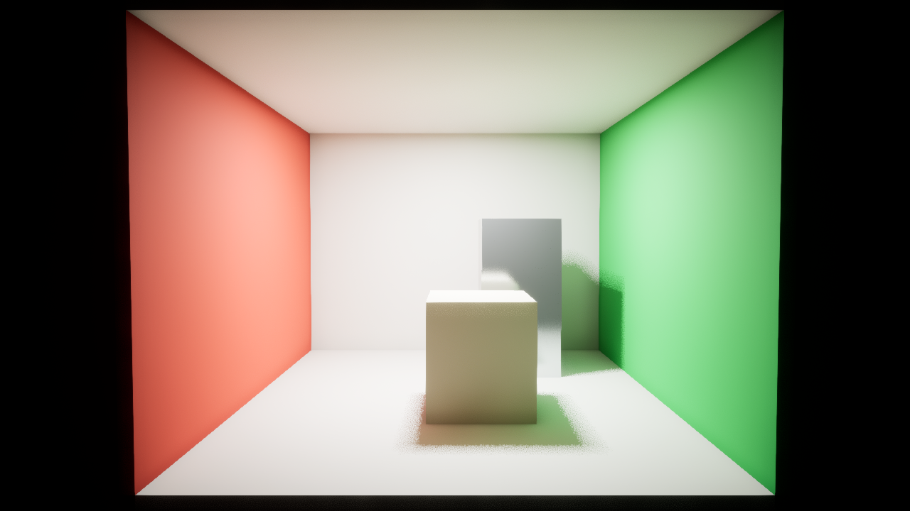
Now change only the light's intensity and color, leaving the moved block in place. The light becomes 7,200 lumens with linear RGB (1,0.55,0.25). The cube geometry and material base colors remain unchanged. Direct lighting changes immediately when the new light data is consumed; indirect illumination and histories need their own update policies. A material recapture is not inherently required merely because a light changed. Cached illumination is the affected quantity.
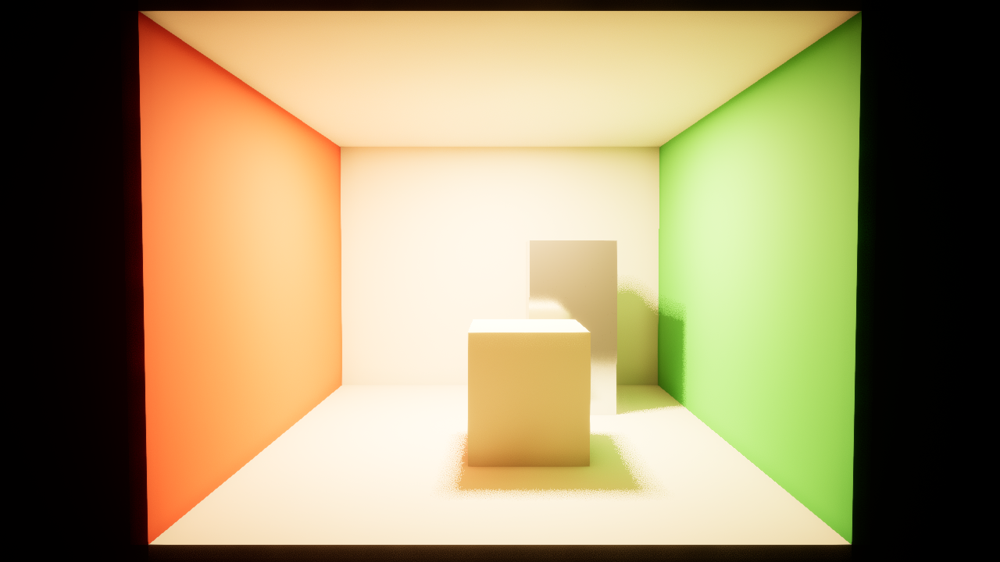
Return to the original room's tracing and caching views. Lumen's mesh distance fields describe geometric proximity for software tracing. Its cards parameterize surfaces for material and lighting storage. These two views answer different questions about the same seven components. A card is not a triangle acceleration structure. A distance field is not a material texture. A valid component transform must place both consistently, but their resolution, update mechanism, and failure modes differ.
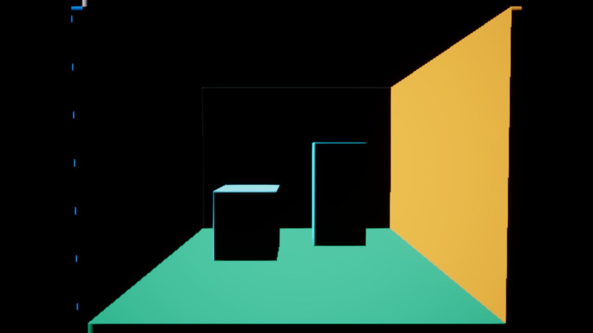
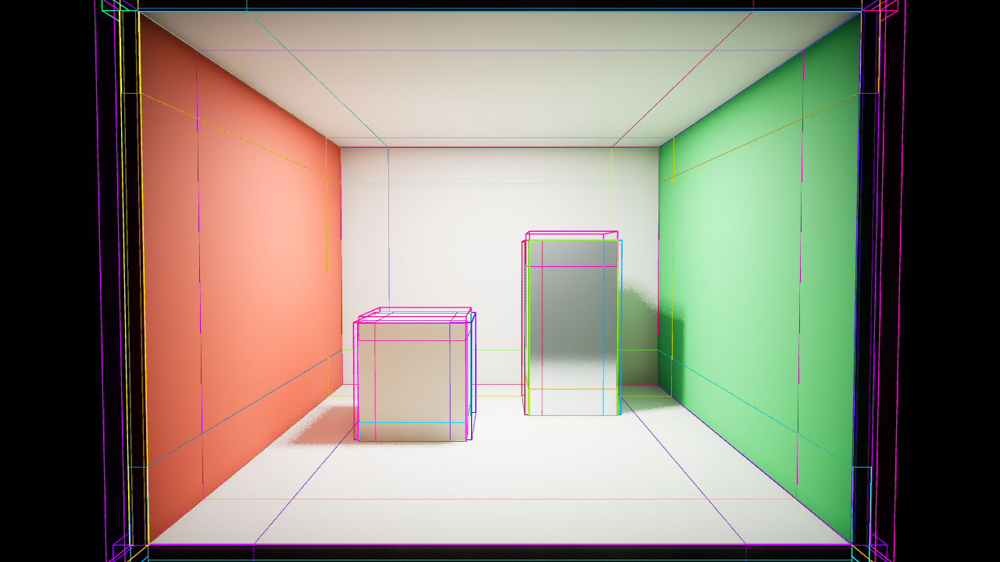
The baseline and its extensions now connect the full architecture. Authoring objects provide semantic identity and editable values. Proxies and scene info organize renderer-owned behavior and membership. GPU records provide compact placement and material access. View passes resolve surfaces. Deferred shading consumes their properties. Lumen maintains additional geometry and radiance representations so light can arrive from surfaces beyond the camera's first hit. The independent Lumen walkthrough follows those caches numerically and visually; the present lesson is that a scene architecture must let each consumer maintain its own representation without losing track of which object and revision it describes.
The reproducibility bundle contains the room creation script, a small project-local editor bridge for verified viewport modes, engine configuration, exported scene inventory, capture commands, and image hashes. Internal proxy addresses, primitive packed indices and draw counts were not instrumented in this experiment, so the essay does not infer them from actor labels. For a future Arda implementation, expose these identities explicitly with generations and revision numbers. That would allow a trace to follow this very block from authoring edit to upload, draw, tracing update and lighting invalidation without relying on a screenshot to guess the transition.
Deriving an Arda scene from the room
We can now design Arda's future scene layer from concrete obligations. The following is a proposal, not a description of existing Arda classes or a promise to reproduce Unreal's internal architecture verbatim. The room requires shared geometry, individually addressable placements, explicit appearance bindings, safe publication across execution boundaries, efficient GPU data, and several consumers of the same world. It also requires some consumers to use different representations. Those requirements are more durable than the exact names or allocation strategies of a particular engine version.
Begin with durable asset records. A geometry asset owns or refers to source geometry and its derived products. The conventional triangle product might contain vertex streams, indices, section-to-material-slot mapping, LODs, and local bounds. A future virtualized product might contain cluster pages and hierarchy data. A ray product might contain acceleration-structure inputs and build state. A volume product would have a different schema. These products should identify their source revision so a rebuild can be recognized and published without silently mixing new indices with old vertices. Asset identity should survive replacement of its current GPU allocation.
Next define a placed-object record. It references a geometry asset and material bindings, carries current and previous transforms, publishes conservative bounds, and identifies optional deformation or per-instance data. Use a handle with an index and generation at the public scene boundary. Internally, the renderer can map that handle to dense arrays and GPU allocations. The mapping is a renderer responsibility. Gameplay should never need to know whether a placement currently occupies GPU entry 400, because relocation and compaction must remain available optimizations.
A material binding should reference a compiled program plus the resources and parameters it needs. A geometry section selects a binding through a defined slot or index. Per-instance variation should have an explicit format, so the shader can distinguish a transform, an object-level tint, and a particle attribute. The compiled material describes relevant capabilities: opaque or masked coverage, displacement requirements, supported shading representation, and the domains in which it can run. This permits the renderer to reject an unsupported combination with a useful explanation rather than produce an accidental partial result.
Publish changes through typed scene operations. A transform update carries the new transform, bounds, and history policy. A parameter update carries a binding revision. A geometry replacement identifies a new asset product. A removal retires the public handle and schedules reclamation for the appropriate consumers. Collecting these operations into a scene revision gives the renderer a coherent publication boundary. It also permits coalescing: if gameplay moves the door three times before publication, the renderer may need only the final state plus a correctly defined previous observation.
// Proposed semantic records; these are not existing Arda APIs.
SceneHandle door = { index: 42, generation: 7 };
TransformUpdate {
object: door,
current: doorToWorldAtFrame121,
bounds: conservativeDoorBoundsAtFrame121,
history: ContinuousMotion
}
RemoveObject { object: door }
// A later replacement may use {42, 8}; stale {42, 7} updates fail.The rendering scene consumes those operations and owns its read-mostly representation. It tracks which GPU records need uploading, which cached commands need rebuilding, which ray structures need updates, and which lighting representations need invalidation. These should be separate dependency consequences, not one undifferentiated “dirty” flag. A transform can update instance data and a TLAS entry. A topology edit can rebuild geometry-related resources. A roughness parameter can invalidate appropriate material or surface-cache state without forcing a new index buffer. Explicit causes keep both correctness and cost visible.
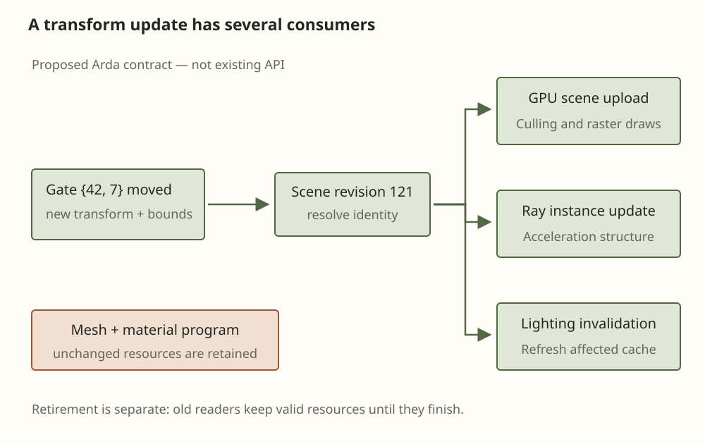
Geometry extensions should supply capabilities through interfaces with narrow responsibilities. A raster provider describes draw or compute-raster inputs. A deformation provider declares input resources, output resources, bounds policy, and history behavior. A ray provider exposes supported geometry and update requirements. An indirect-lighting provider can supply a surface capture or another representation when appropriate. These need not become four virtual methods on every object. They can be registered product types and handlers keyed by geometry kind. The essential requirement is that the core scene can discover and schedule them without knowing every specialized implementation in advance.
The shared GPU scene schema should start with only data broadly required for addressing, transforms, bounds, and flags. Optional payload ranges can hold specialized values. Otherwise each new geometry type will enlarge every object's record, increasing bandwidth for consumers that do not need those fields. Version the CPU-to-shader packing contract and test it with known records. Use the already measured matte block as the test object: its asymmetric scale, known corners, distinctive material, and recorded translation reveal swapped indices and matrix conventions. Keep the room baseline unchanged as a reference while exercising one update at a time.
A point provider exposes the value of explicit capabilities
Test the proposed design with a deliberately incomplete new feature: a point-cloud provider for the scan of this room. Its records contain positions and colors. It can generate camera-facing point footprints for the main raster view, but it has no UV coordinates, no authored surface normals, and no ray-intersection product. A flat vertex-color material is compatible with that declared raster interface. Our textured ceramic material that requires UV0 and a tangent-space normal map is not. Arda should reject that binding with the missing attributes named, or require an explicitly selected adapter that generates UVs and a documented normal convention. Silently feeding zeros would turn an interface mismatch into an unexplained visual artifact.
The same provider must report its ray capability as unavailable. A successful raster screenshot must not register an imaginary BLAS, promise an accurate mirror reflection, or imply complete GI participation. A later provider could generate triangles or finite ray-intersectable point geometry as a separate product, with explicit quality and update costs. A screen-space effect might still observe the visible footprints, but that observation disappears outside the image and is not equivalent to a persistent world-space tracing representation.
Now edit one scanned point. Its position update dirties the point buffer and conservative bounds, and it changes the raster representation that reads them. If a reconstructed triangle or ray product exists and depends on those samples, its source revision becomes stale and its owner schedules the appropriate update or rebuild. If no such product exists, there is nothing to pretend to update. Old in-flight draws keep the old buffer alive until their consumers finish; the newly published scene revision uses the replacement allocation. Changing only the point's display color can take a narrower path, provided no declared derived product uses that color. This is a small, testable extension of the scene's identity, dependency, and lifetime rules.
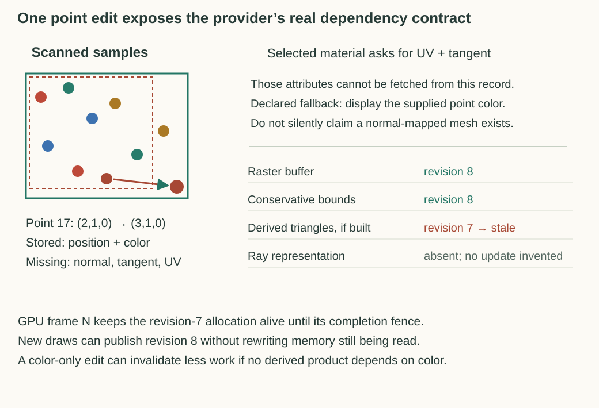
Keep persistent scene state distinct from frame work. The scene owns object identity, resource references, revisions, and temporal state. A frame builds views and schedules uploads, deformation, visibility, rasterization, lighting, and image processing through a graph of resource dependencies. Transient depth or GBuffer textures belong to that frame's rendering work; the tile asset does not disappear when those textures are recycled. Persistent lighting caches span frames but are owned by their subsystem and keyed to scene revisions. This separation gives a render graph useful freedom without making it the database of the world.
Streaming follows the same rule. A geometry asset can exist before its preferred LOD or cluster page is resident. The scene record remains valid while a resource manager selects a resident fallback or delays a particular consumer. Residency is not the same thing as object existence. Different consumers can require different products: a far object may need a coarse visible mesh, an occlusion representation, or a ray-tracing fallback. Making residency state explicit prevents one missing high-detail page from becoming a dangling scene reference.
Now run one proposed Arda frame of the extended room. Gameplay advances the door hinge and mannequin pose and changes the ceiling light intensity; enabling the optional effects fixture also spawns basin particles. It publishes a coherent batch of scene operations. The render scene resolves handles, updates world-space records and conservative bounds, and records affected representations. GPU uploads make changed primitive and instance data available. Deformation produces the character's current surface and the history needed for motion. View-dependent culling selects work for the camera and other consumers without destroying off-screen objects.
The raster path combines geometry access, material behavior, and pass requirements. Opaque and masked surfaces produce depth and the chosen deferred surface representation. Shadow work establishes relevant light visibility. Direct lighting evaluates the ceiling source against those surface properties. Indirect lighting queries the representations it supports, uses or refreshes persistent caches, and contributes reflected illumination. If their optional fixtures are enabled, transparent spray, mannequin hair, and mist follow their declared specialized paths and are composed into the image. Temporal and post-processing consumers use motion, history validity, depth, and color to produce the final display image.
At the end of that frame, several forms of the room still coexist. Gameplay retains actors and component relationships. The renderer retains registered objects and their render products. GPU buffers retain addressable scene records. Acceleration structures retain a form suited to rays. Lighting caches retain partial answers worth reusing. None is the universal master layout for every subsystem. They remain coherent because identity, publication, dependency, and lifetime have explicit contracts.
That is the essential structure of scene representation. A triangle became a shared asset; a placement gave it identity; a component made it authorable; a proxy made parallel rendering safe; GPU records made it efficiently addressable; pass processing made it usable by different raster operations; and additional representations made it visible to lighting queries beyond the camera. Arda can begin with a modest triangle renderer while preserving these boundaries. The value of the design is that adding a terrain patch, a simulated ribbon, or a new GI method then extends known contracts instead of forcing every system to agree on one increasingly overloaded kind of scene node.
Extend the room until its geometry contract is explicit
We have followed seven cube components through the renderer. Now keep the same four-by-five-by-three-meter room, the same red and green walls, and the same matte and glossy blocks, and ask what changes when we furnish it. Three pots of repeated leaves introduce instancing. A mannequin introduces a skeleton. A cable, a breakable panel, smoke, and a basin each expose a different contract. The room stays our reference frame: every new object must explain what data it adds, who updates that data, and which rendering consumers can use it. This is the proposed Arda compatibility contract, not a claim that Arda already implements these adapters.
Separate the room's states before reading the diagrams. The baseline capture contains exactly five enclosing static-mesh surfaces and two static-mesh blocks, plus a separate rectangular light. The captured extension adds the mannequin, three pot instances, three stem instances, twenty-four leaf instances, and the hinged door with its indicator; the original seven placements stay fixed. The specialty fixtures below are explicit schematic alternatives or additions. A diagram of a cloth strip, groom, Landscape exhibit, Water body, or volume does not claim that the associated plugin is running in those captures. Nor do the alternatives all coexist in one crowded room.
Room object map: measured baseline, captured extension, and proposed specialty fixtures
| Stage and location | Object or alternative | What it establishes |
|---|---|---|
| Baseline: room shell and blocks | Floor, ceiling, red wall, green wall, back wall, matte block, glossy block; separate ceiling RectLight | Seven measured mesh components share one cube asset. The light is a scene service, not an eighth mesh. |
| Captured extension: open-front area | Mannequin toward the red side; three pots, three stems, and twenty-four leaf instances toward the green side; hinged door and indicator | Real skinning poses, shared instance geometry, and parent/child transforms. Geometric leaf instances establish ISM behavior, not the FoliageActor or Landscape grass producer contracts. |
| Specialty surface alternatives | Raised floor exhibit, skirting cable, wall test panel, baked cloth strip | Heightfields, spline deformation, generated/editable topology, fracture pieces, cached geometry, or a BSP back wall. Enable one alternative to test its adapter. |
| Specialty effects station | Smoke sprites, ribbon trail, mesh debris, or a bounded density field | Different renderer outputs under a simulation system; a shared emitter concept does not imply a shared raw geometry form. |
| Specialty appearance and services | Mannequin hair, control display, fixture markers, room label, shallow basin, room survey, optional skylight | Curves, planar UI, generated water, point samples, and environment services. The skylight changes the roof to expose an external sky; clouds remain outside the room. |
The scope is the rendering families present in the inspected Unreal 5.8.1 source, including named optional plugins. Core adapter target identifies an early Arda implementation target; feature mode adds distinct evaluation or representation; plugin scope requires the corresponding plugin's assets and semantics. These planning labels are separate from whether a fixture appears in the captured room. A project claiming compatibility with content using one of these families must implement it or report the unsupported feature explicitly. Unreal permits additional plugins and custom components, so no finite built-in list guarantees arbitrary-project compatibility.
Each SVG uses the same room plan on the left and a magnified representation on the right. The yellow locator is an explanatory staging position; only the baseline component inventory and the captured extension report provide measured placements. The specialized diagrams are original schematics, not Unreal screenshots. Repeated instances, skinned surfaces, centerline-expanded ribbons, sampled points, and integrated density have different data contracts. FBX, Alembic, USD, LAS, or VDB names an import path, not the runtime primitive or renderer.
Jump to a room fixture and its geometry contract
- Conventional static meshes
- Nanite-enabled triangle geometry
- ISM, HISM, foliage, and landscape grass
- Skeletal and instanced skinned meshes, morphs, Chaos cloth, and deformers
- Landscape, Nanite Landscape, and Virtual Heightfield Mesh
- Spline-deformed meshes and spline data
- Procedural mesh sections
- Editable dynamic meshes
- Geometry-cache animation
- Chaos Geometry Collections
- BSP/model surfaces and brush visualization
- Niagara and Cascade sprite particles
- Niagara and Cascade ribbons and beams
- Niagara and Cascade mesh particles
- Groom strands, cards, and hair meshes
- LiDAR point clouds
- Sparse heterogeneous volumes: smoke, fire, and fog
- Volumetric cloud layers
- Paper2D sprites, flipbooks, and tile maps
- Billboards and material billboards
- World-space text
- World-space widget surfaces
- Water bodies and their generated surfaces
- Lights, decals, atmosphere, height/local fog, and post-processing
1. Conventional static meshes
Start with the matte block we already measured. Its world-space size comes from its component transform; its triangles still come from the shared cube asset. The door in the captured extension uses the same rigid-surface contract even while its parent hinge moves. Translation or rotation alone does not turn either object into a skeletal mesh.
Core adapter target · UStaticMeshComponent. The asset supplies indexed triangle sections, vertex attributes, material slots, bounds, and conventional LOD resources; the component supplies placement and rendering flags. Arda needs an adapter that preserves section/material identity, UV and tangent conventions, current and previous transforms, LOD selection, and culling bounds. It must then provide the appropriate depth, base, shadow, and velocity work. Ray-tracing geometry and distance-field or card representations are additional products, not fields that magically appear because the raster mesh loaded. Material blending and World Position Offset can change which passes are needed. A rigid object moving every frame still belongs to this geometry family; “static mesh” describes its asset representation, not an immovable actor. StaticMeshComponent.h
2. Nanite-enabled triangle geometry
For a specialty variant, mount a finely sculpted panel on the back wall and enable Nanite for that asset. Keep its placement and material role fixed while changing the geometry backend. The baseline cube room does not by itself demonstrate cluster streaming or prove that an Arda conventional-mesh importer can consume Nanite resources.
Feature mode · typically UStaticMeshComponent, also the supported instanced, spline, skinned, and collection paths. Supporting a conventional static mesh does not mean Arda can consume Nanite's cluster hierarchy, streaming pages, visibility results, or programmable raster/shading behavior. Arda must either implement a compatible virtualized-geometry representation or explicitly select an available conventional fallback with a stated fidelity difference. Displacement, masking, deformation, shadow rendering, and ray tracing each need their own capability decision. An acceleration structure may use a fallback or another supported Nanite representation; it is not automatically the same triangles selected for the camera. The inspected code has a separate skinned-Nanite gate, so the common claim that Nanite categorically means rigid static geometry is already too narrow for this revision. SkinnedMeshComponent.cpp: Nanite feature gate See also Epic's versioned Nanite overview.
3. ISM, HISM, foliage, and landscape grass
Use the three pots, three stems, and twenty-four leaf placements in the captured room extension as the smallest visible instancing test. These are thirty instances across three ISM components, with one shared mesh per component. Moving one leaf changes its instance data; it need not duplicate the leaf mesh. Those geometric leaves use ISM and a masked, two-sided-foliage material; the material shading model does not turn their source into a FoliageActor. A proposed foliage-authored version of the same planter, or grass generated on the floor exhibit, tests additional producer contracts that the ISM capture alone cannot establish.
Core adapter target, with feature modes · UInstancedStaticMeshComponent, UHierarchicalInstancedStaticMeshComponent, UFoliageInstancedStaticMeshComponent, and UGrassInstancedStaticMeshComponent. The raw surface is shared; instance transforms, previous transforms, custom data, visibility, and identifiers vary. HISM adds hierarchical organization, while foliage and grass systems own placement and regeneration policies. Arda needs stable instance identity, bulk updates, per-instance data, culling/LOD behavior, and material access to instance variation. Expanding all instances into unrelated duplicated meshes can reproduce a picture but loses the memory, update, and GPU-driven behavior needed at foliage scale. A supported Nanite mesh changes the geometry backend, not the ownership of instance data. Shadow and ray representations must preserve the relevant instances, and masked or displaced vegetation needs consistent bounds and coverage. InstancedStaticMeshComponent.h HierarchicalInstancedStaticMeshComponent.h FoliageInstancedStaticMeshComponent.h GrassInstancedStaticMeshComponent.h
4. Skinned meshes, morphs, cloth, and mesh deformers
The room mannequin supplies the counterexample to moving a whole rigid object. During its walk pose, vertices on the forearm move relative to the torso, so one actor transform is insufficient. The two captured mannequin poses demonstrate a real skeletal component. A facial morph, simulated garment, manually controlled pose, or repeated skinned instances of that mannequin is a separate feature test, not something established by one successful skeletal capture.
Core skinning target plus feature modes · USkeletalMeshComponent through USkinnedMeshComponent. Inputs include indexed geometry, bone indices and weights, a pose, optional morph deltas, cloth output, and mesh-deformer results. Arda's adapter must define the deformation order and provide current and previous deformed positions, shading attributes, material sections, and updated bounds. A bind-pose mesh plus an actor transform is insufficient. Velocity and shadow passes need compatible deformation; ray-tracing geometry needs an appropriate build or update, and GI representations can have different fidelity or update cadence. Nanite skinning is separately gated in this checkout and does not prove that every morph, cloth, or deformer combination follows that path. Record the specific supported combination and fallback rather than advertising one Boolean “skeletal support.” SkeletalMeshComponent.h SkinnedMeshComponent.cpp: skinned rendering modes
The adapter should target the skinned/deformation contract rather than recognize only USkeletalMeshComponent. UPoseableMeshComponent supplies manually controlled poses. UInstancedSkinnedMeshComponent adds instance transforms, animation indices, custom data, and previous transforms, so instancing is not limited to static meshes. In the Chaos Cloth Asset plugin, UChaosClothComponent also derives from USkinnedMeshComponent and accepts cloth or outfit assets. Each producer needs its appropriate pose/deformation handoff; none is correctly covered by checking only the skeletal-component class name. PoseableMeshComponent.h InstancedSkinnedMeshComponent.h Chaos ClothAsset/ClothComponent.h
5. Landscape heightfields and Nanite Landscape
Place a small raised terrain exhibit on the room floor, leaving the original floor cube intact. In one variant, author the exhibit as Landscape height and layer tiles; in another, feed a Runtime Virtual Texture height producer to Virtual Heightfield Mesh. This deliberately unusual indoor fixture lets us compare terrain providers without introducing a second outdoor scene. Its dimensions must be chosen through the provider's valid grid and scale settings, not by assuming a Landscape is an arbitrary mesh patch.
Terrain adapter plus feature mode · ULandscapeComponent and ULandscapeNaniteComponent. Conventional Landscape uses tiled height and weight data, terrain topology/LOD rules, material layers, and hole information. Arda must preserve tile adjacency, coordinate/scale conventions, layer sampling, holes, bounds, and a compatible terrain surface. Nanite Landscape adds derived Nanite mesh data through a distinct component type. It does not make every heightfield use disappear: collision, water-related use, and other systems can still depend on the original terrain representation. Shadows and GI must consume a representation with the same shape and holes; a generic flat grid with a color texture is not terrain compatibility. The two component classes and Epic's Nanite Landscape documentation make the coexistence explicit. LandscapeComponent.h LandscapeNaniteComponent.h
A separate plugin provider, UVirtualHeightfieldMeshComponent, renders a heightfield from a Runtime Virtual Texture heightmap. It is not a renamed ULandscapeComponent. Arda needs the virtual-texture producer and sampling contract, min/max height data, tile/LOD selection, material binding, and the provider's explicit velocity/shadow capabilities. The separate RVT producer in the diagram illustrates this alternative data source. A static export of the resulting surface is a possible approximation, but it loses live updates to the virtual height field. VirtualHeightfieldMeshComponent.h
6. Spline-deformed meshes and spline data
Run a cable along the green-wall skirting and bend it around the glossy block. The centerline stores control information; a spline-mesh component supplies a source surface and deforms it along that curve. Change the cable bend and inspect its shadow and previous-frame positions as well as its main-view silhouette.
Feature mode · USplineMeshComponent; distinguish USplineComponent. A spline mesh deforms a source static mesh using spline parameters, roll, scale, and an axis convention. Arda must evaluate compatible positions and tangents, expand conservative bounds, and retain prior deformation for motion when needed. A spline component stores curve information and can draw a debug visualization, but it does not inherently generate a production cable surface. It actually derives from UPrimitiveComponent in this source; inheritance alone therefore cannot be used to infer a production geometry contract. Its debug draw relevance is gated by spline visualization settings. Conventional or Nanite spline rendering, shadows, ray geometry, and Lumen capture each require consistent deformation or an explicit approximation. SplineMeshComponent.h SplineComponent.h SplineComponent.cpp: debug draw relevance
7. Procedural mesh sections
Build the back-wall test panel by submitting its vertex arrays and triangle indices from code. Add one triangle or change a corner position while leaving the rest of the room unchanged. This isolates the adapter's section creation, buffer lifetime, bounds update, and material assignment from any particular mesh-generation algorithm.
Plugin scope · UProceduralMeshComponent. Its section-creation API accepts vertex positions, triangle indices, normals, UV sets, colors, and tangents. Arda needs a section-based mutable mesh adapter with validated indices, material assignment, explicit update lifetimes, and bounds recomputation. Collision creation is a separate request in the API; a collision mesh is not a substitute for the rendering buffers. Position-only updates and topology replacements should invalidate different resources where possible. Conventional raster, depth, shadow, velocity, and optional ray geometry need compatible updates; prebuilt static-mesh distance fields or Nanite pages should not be assumed to exist for arbitrary newly generated triangles. This family is about application-provided geometry, not any particular algorithm used to generate it. ProceduralMeshComponent.h: section data contract
8. Editable dynamic meshes
Now use an editable mesh object for that same wall test panel and cut a notch into its lower edge. The new boundary changes topology and potentially normal/UV seams; this is richer than updating four positions in a fixed procedural section. The visual checkpoint is the notch in both the image and the shadow, with a conservative updated bound.
Feature mode · UDynamicMeshComponent through UBaseDynamicMeshComponent. The source representation is FDynamicMesh3 through a mesh object, with attributes and potentially changing topology. Arda must convert or directly maintain compatible render sections, attribute seams, material IDs, and update regions. Unreal exposes different notifications for full mesh changes and more limited attribute or position changes, demonstrating why a single “upload mesh again” operation misses useful update semantics. A runtime cut can invalidate index buffers, bounds, acceleration structures, and secondary surface representations together. Raster support alone does not establish automatic Nanite, distance-field, or GI-cache support for every edit; each representation needs an explicit rebuild/update policy. DynamicMeshComponent.h: mesh representation DynamicMeshComponent.h: update notifications
9. Geometry-cache animation
Hang a short cloth strip from the wall test panel and bake its motion to geometry samples. We can then ask for the sample at time t without solving cloth simulation in the renderer or evaluating a skeleton. This differs from the optional live cloth on the mannequin: the source of the positions is the cache timeline.
Plugin scope · UGeometryCacheComponent. Geometry caches provide time-sampled mesh tracks, transforms, bounds, and applicable motion information; topology can differ according to the cache content and codec. Arda's adapter needs track/time selection, interpolation rules where supported, sample streaming, materials, and previous-position or motion-vector semantics. Treating every sample as a skeletal pose invents a bone model the asset does not contain. Conversely, displaying only one frame loses the essential behavior. Shadows and ray-tracing geometry must update with the chosen sample, and expensive rebuilds or missing secondary GI representations must be reported as capability limits. Alembic is a possible content route into such a cache, not the runtime component itself. GeometryCacheComponent.h: track-oriented component GeometryCacheComponent.h: motion-vector controls
10. Chaos Geometry Collections
Replace the wall test panel with a pre-fractured collection. The intact view should resemble the earlier panel; after impact, the visible pieces have independent transforms and newly exposed interior faces. Keeping this one object and camera fixed makes it obvious why one static combined mesh cannot describe both states.
Feature mode · UGeometryCollectionComponent. A collection carries mesh pieces, a transform hierarchy, material assignments, and simulation-driven visibility or fracture state. Arda needs piece identity and transforms, the relationship between parent clusters and visible pieces, interior-face materials, bounds, and current/previous state. A single combined triangle mesh may reproduce the intact object but cannot reproduce the transition to independently moving fragments without additional structure. Conventional and Nanite collection rendering are separate supported modes to negotiate. Shadow and ray representations must follow active pieces; secondary lighting representations may update at a different rate. Chaos simulation itself can remain a distinct producer of state if the compatibility goal is rendering its output, but the rendered result must preserve the simulation's piece activation and motion. GeometryCollectionComponent.h
11. BSP/model surfaces and brush visualization
Consider an alternative authoring history for the back wall: construct it with brushes and cut a doorway. The baseline room uses cube components, so this is not a reinterpretation of its measured asset inventory. It is a compatibility test that asks whether a cooked model surface with the same wall role can enter Arda without the editor's brush workflow.
Feature mode · UModelComponent; distinguish UBrushComponent. Older or blockout-oriented levels can contain model surfaces derived from BSP/brush operations. Arda needs the resulting polygon/triangle surfaces, surface material assignments, texture-coordinate mapping, bounds, and visibility semantics if these levels are in scope. It need not execute the editor's entire constructive modeling workflow merely to render a cooked result. A brush component can also serve editor or volume visualization, so copying its displayed wireframe is not necessarily the intended production surface. Conventional raster compatibility should be assessed separately from ray tracing, Nanite conversion, and GI data; converting a model to a supported static mesh is an explicit migration path with its own fidelity checks. ModelComponent.h BrushComponent.h
12. Niagara and Cascade sprite particles
Put a small effects station in the room's open-front area and emit smoke motes above it. In the sprite version, each particle record becomes a facing quad. Moving the camera exposes the orientation rule; overlapping motes expose sorting and compositing. Neither test requires pretending the smoke consists of independent UObject mesh components.
Plugin scope · UNiagaraComponent with UNiagaraSpriteRendererProperties. Input records carry positions, sizes, rotations, colors, velocities, and material attributes produced by CPU or GPU simulation. Arda needs compatible particle-buffer bindings, billboard orientation, sorting and bounds, indirect counts where applicable, and the renderer's material-input convention. A particle is not a separate UObject mesh component. Translucent sprites need their appropriate compositing and lighting path; masked sprites have different coverage/shadow behavior. Motion, shadow casting, ray visibility, and participation in GI are renderer/material features to negotiate, not consequences of drawing a quad. Matching the simulation output format and sprite expansion is the rendering contract even if the simulation implementation lives elsewhere. NiagaraComponent.h NiagaraSpriteRendererProperties.h
Legacy Cascade content uses UParticleSystemComponent and its emitter/module data instead of Niagara. Its sprite output has a similar low-level quad form but different simulation, attribute, and sorting conventions, so it requires a separate source adapter. The same distinction applies to its mesh, beam, and ribbon modes described below. Supporting Niagara does not automatically import Cascade assets. ParticleSystemComponent.h ParticleModuleRequired.h
13. Niagara and Cascade ribbons and beams
At the same effects station, replace the smoke motes with a continuous light trail. Ordered points now define a connected strip, so adjacency, width, and UV flow matter. A ribbon and a beam-like effect can share this generated-surface mechanism while receiving different point arrangements.
Plugin scope · UNiagaraComponent with UNiagaraRibbonRendererProperties. A ribbon uses ordered points, ribbon identifiers, width, tangent/facing data, tessellation, and UV-distribution rules to construct connected surface geometry. Beam templates can use this machinery with an appropriate point-generation arrangement; do not invent a required UNiagaraBeamRendererProperties class. Arda needs ordering, connectivity, width expansion, interpolation, materials, bounds, and previous-frame behavior. Independent point sprites cannot reproduce a continuous ribbon's silhouette or texture flow. Sorting, translucency, shadow behavior, and ray/GI representation remain separate choices, particularly when a rapidly changing trail's topology or length changes every frame. NiagaraRibbonRendererProperties.h
For legacy Cascade, the exact source modes include UParticleModuleTypeDataRibbon and UParticleModuleTypeDataBeam2 within UParticleSystemComponent. Their tessellation, connectivity, and material-coordinate conventions must be translated explicitly. Unlike the Niagara example above, a named Beam2 type-data class does exist here. The shared graphical forms explain what can be reused in Arda's renderer; they do not erase the producer-specific contract. ParticleModuleTypeDataRibbon.h ParticleModuleTypeDataBeam2.h
14. Niagara and Cascade mesh particles
Use the station once more, this time emitting small fragments resembling chips from the wall test panel. The fragments have visible thickness and orientation, so mesh resources accompany their particle state. This reuses mesh rendering machinery but has simulation-owned counts and lifetimes rather than the persistent instance list used by the planter.
Plugin scope · UNiagaraComponent with UNiagaraMeshRendererProperties. Mesh particles combine particle attributes with selected mesh resources, material overrides, and renderer-specific scaling/orientation. Arda can reuse mesh and instance machinery, but it must adapt particle-driven counts, selection, bounds, previous transforms, and simulation-buffer ownership. The instanced data source and lifetime differ from a persistent ISM component. Conventional, Nanite-related plugin paths, shadows, and ray visibility must be identified separately for the selected renderer and platform. A generic “Niagara supported” label that handles only sprites would silently lose debris meshes; a mesh-only implementation would lose smoke and trails. These three particle entries are distinct renderer modes under the same high-level component. NiagaraMeshRendererProperties.h
Cascade's UParticleModuleTypeDataMesh is the legacy mesh-particle producer and likewise needs its own attribute adapter. Niagara also has renderer families beyond the three surface forms illustrated here: UNiagaraVolumeRendererProperties connects to heterogeneous volume rendering, while UNiagaraLightRendererProperties and UNiagaraDecalRendererProperties produce scene-service contributions. Thus the three particle surface entries are not an exhaustive inventory of Niagara renderer outputs. ParticleModuleTypeDataMesh.h NiagaraLightRendererProperties.h NiagaraDecalRendererProperties.h
15. Groom strands, cards, and hair meshes
Give the room mannequin hair as a separate specialty variant. At close range, draw strands; at a chosen LOD, substitute cards or a coarse hair mesh. Root binding must follow the mannequin's deformation in every supported representation. The captured mannequin poses alone do not demonstrate a Groom asset, strand shading, or hair ray-tracing support.
Plugin scope · UGroomComponent. Strands use curve samples with hair-specific attributes and specialized visibility/shading; cards and meshes use surface geometry approximating groups of hairs. Arda must preserve the selected representation, root binding, deformation/simulation output, LOD transitions, material requirements, and bounds. Treating strand data as an ordinary indexed triangle buffer omits the curve-to-coverage problem and hair scattering. Cards require alpha/coverage and orientation behavior consistent with their textures. Shadows and ray tracing have representation-specific resources, and GI behavior is not established merely by a successful main-view image. The component explicitly carries strand, card, and mesh material/resource concepts; compatibility must state which modes are supported. GroomComponent.h: representation-specific materials
16. LiDAR point clouds
Imagine surveying this exact room, retaining measured positions and colors rather than rebuilding its walls as triangle meshes. The illustration uses synthetic samples of the room planes to show the data shape; it is not a real LiDAR capture. Changing the point footprint exposes gaps and overlap, which a watertight triangle importer would not encounter.
Plugin scope · ULidarPointCloudComponent. Raw points carry positions and appearance data, with spatial organization and point-rendering controls. Arda needs point selection/streaming, size or footprint interpretation, color mapping, camera behavior, and bounds. Rendering a small billboard or splat for each selected point is different from assuming the source contains a watertight triangle mesh. A reconstructed triangle proxy, if generated for another purpose, is a separate representation. Shadow casting, ray intersections, and GI coverage must be implemented or approximated deliberately; gaps between samples and point-size choices change visible coverage. The component exposes point size, shape, orientation, and coloration settings that belong in the adapter contract. LidarPointCloudComponent.h: point appearance controls
17. Sparse heterogeneous volumes: smoke, fire, and fog
Replace the station's smoke sprites with an actual density field. Looking through the same bounded region now accumulates scattering, absorption, and emission along a ray. The cube around the field limits the work; it is not the smoke's opaque skin. This is the clean comparison between a surface impostor and a participating medium in one room.
Feature mode · UHeterogeneousVolumeComponent, with sparse-volume assets/materials as applicable. Inputs describe spatial fields such as density, scattering, absorption, and emission, potentially animated through Sparse Volume Texture frames. Arda needs volume bounds and transforms, field sampling/streaming, time selection, step/integration policy, volume-domain material evaluation, and appropriate light/shadow interaction. A cube can bound the work, but shading only the cube's faces cannot reproduce the smoke. Ordinary surface GBuffer, triangle BLAS, and card-capture support do not imply volume support. The component's resolution, frame transform, and animation fields expose this different data model; Epic's volume documentation details the renderer-specific path. HeterogeneousVolumeComponent.h
Niagara can also produce this renderer family through UNiagaraVolumeRendererProperties, whose UseHeterogeneousVolumes() returns true. In the inspected header its source mode is Emitter, and particle source mode is explicitly left as future work; this is not evidence that arbitrary per-particle volumes are supported. Arda needs that emitter-level volume's material bindings, transform, size/resolution, and sampling parameters in addition to the volume consumer itself. NiagaraVolumeRendererProperties.h: volume path and source-mode limit
18. Volumetric cloud layers
For this service test only, cut an optional skylight into the room's ceiling and look upward from the same interior. Clouds belong to the external atmosphere visible through that opening. Scaling a planetary cloud layer down into the room would change the model being tested; indoor localized smoke belongs to the preceding volume family. The baseline room has a closed ceiling and no such cloud contribution.
Feature mode · UVolumetricCloudComponent, which derives from USceneComponent. Cloud layer altitude/height, a volume material, tracing limits, and lighting/shadow settings describe the rendered medium. Arda needs a cloud/atmosphere adapter with compatible density coordinates, ray integration, aerial perspective, temporal treatment, and light interaction. This cannot be discovered solely by enumerating UPrimitiveComponent objects. A sky-textured sphere is an explicitly different approximation. Main-view, reflection, and shadow ray sampling have separate controls in the component, so a single generic triangle-pass capability flag cannot describe cloud compatibility. VolumetricCloudComponent.h: layer and sampling settings
19. Paper2D sprites, flipbooks, and tile maps
Mount a small control display on the green wall. One implementation uses a Paper2D status sprite, an animated flipbook icon, and tile-map cells for a small layout diagram. All remain planar, yet the importer must preserve three different sources of UVs, frame selection, and ordering.
Plugin scope · UPaperSpriteComponent, UPaperFlipbookComponent, and UPaperTileMapComponent. Sprites provide planar render geometry and texture regions; flipbooks choose sprite frames over time; tile maps arrange cells into layers with per-tile appearance and transforms. Arda needs pivots, pixel-to-world scale, UV/atlas handling, frame timing, layer ordering, material/blend behavior, and bounds. Flattening a tile map into a photograph loses parallax and editable layer semantics; treating a flipbook as one permanent quad texture loses its animation contract. Depth, shadow, and lighting behavior depend on the chosen materials and renderer settings. These surfaces may share low-level triangle code while still requiring different source adapters. PaperSpriteComponent.h PaperFlipbookComponent.h PaperTileMapComponent.h
20. Billboards and material billboards
Attach floating markers to the matte block and glossy block. As the room camera moves, their surfaces turn toward the viewer. These are deliberate in-game labels; editor light icons or component gizmos should not be exported merely because they also use billboards.
Feature mode · UBillboardComponent and UMaterialBillboardComponent. A billboard describes a facing quad or similar generated surface, its texture/material, sizing, and potentially distance-dependent appearance. Arda must reproduce camera-facing orientation, screen/world size interpretation, bounds, and depth/translucency behavior. Do not replace all billboards with fixed world planes: their silhouette changes differently as the camera moves. Some uses are editor icons and should be excluded from a production-scene export according to visibility flags; others are intentional in-game visuals. Shadow, ray, and GI inclusion must follow the content's role and explicit capability, rather than manufacturing solid geometry from every icon. BillboardComponent.h MaterialBillboardComponent.h
21. World-space text
Place the label ROOM 01 next to the control display. Changing it to ROOM 100 can change glyph count, layout, geometry, and bounds while leaving the component transform fixed. A font texture plus a transform is therefore not enough to reproduce the component.
Feature mode · UTextRenderComponent. Text content, font metrics/atlas data, alignment, world scale, color, and material settings determine the generated glyph surfaces. Arda needs compatible text layout and glyph sampling as well as a rendering adapter; loading only the component transform and font texture is insufficient. Text changes can change geometry and bounds. Depth, masking/translucency, and material lighting determine its pass behavior. Ray and GI treatment should be explicitly scoped; a distant label does not automatically need a solid volumetric proxy. This is world-space scene text, distinct from a screen-space UI overlay or arbitrary rich UMG widget composition. TextRenderComponent.h
22. World-space widget surfaces
Keep the control display's location but implement it as a UMG widget rendered to a target. Compare a flat panel with the component's cylindrical mode. The UI producer supplies the image and its redraw timing; the world-space surface supplies geometry, depth, and transform behavior.
Feature mode · UWidgetComponent. In world space, the widget is rendered to a target and displayed using a configured geometric surface; the component exposes plane/cylinder geometry modes, draw size, and render-target access. Arda needs either compatible widget evaluation or an explicitly supplied rendered UI surface, then the correct transform, curvature, material, alpha handling, timing, and bounds. Screen-space mode belongs to a different composition path and must not be exported as an arbitrary world quad. Interaction/hit testing is a separate compatibility concern beyond drawing. Shadows and GI depend on the surface/material policy; preserving readable UI usually requires deliberate treatment rather than assuming ordinary lit opaque shading. WidgetComponent.h: spaces and geometry modes WidgetComponent.h: render target and sizing
23. Water bodies and their generated surfaces
Place a shallow basin near the glossy block. Its shell can remain an ordinary static mesh; the optional Water-plugin fixture supplies the water-body description and an appropriate generated or custom surface. Do not infer Water-body compatibility from a blue plane or from a material using a water shading model. The basin is a controlled small test, not a claim that all river/ocean features have been exercised.
Plugin scope · UWaterBodyComponent and the Water plugin's mesh-producing components. Water bodies carry shape, material, and water-specific state and can contribute to the shared water mesh or use alternative primitive/static-mesh components. Arda needs the resulting surface topology/LOD, wave displacement, bounds, materials, depth/underwater semantics, and relevant scene textures. Importing only the basin boundary or a water-body spline does not reproduce its rendered water. Reflection, refraction, shadowing, and GI behavior are specialized material/rendering features to negotiate; a blue opaque mesh is merely an explicit fallback. The source exposes both whether a body affects the water mesh and a list of alternative primitive components, making the description/geometry distinction visible. WaterBodyComponent.h: water mesh and alternative primitives
24. Scene contributors that are not ordinary geometry
Return to the actual ceiling RectLight: it illuminates all suitable room surfaces without contributing another cube mesh. Then propose a decal on the matte block, a bounded fog patch near the effects station, or a changed view color grade. Their different visual effects explain why a compatible scene importer needs more than a primitive-component walk.
Separate scene services · UDecalComponent, ULightComponentBase and derived lights, USkyAtmosphereComponent, and UPostProcessComponent. These derive from USceneComponent in the inspected hierarchy rather than from the ordinary mesh/primitive path. Decals project material effects onto eligible receivers; lights supply illumination; atmosphere supplies participating-medium behavior; post-process components supply view settings. Arda needs corresponding service adapters, receiver/pass rules, and blending/priority semantics. Their gizmos or volume bounds are not the final visual effect. Separately, UShapeComponent descendants such as collision boxes, spheres, and capsules, brush volumes, and spline debug lines can derive from primitive classes while serving collision or visualization. Include them as visible production geometry only when content actually requests that visualization. No automatic shadow/ray/GI mesh should be invented from every editor outline. DecalComponent.h LightComponentBase.h SkyAtmosphereComponent.h PostProcessComponent.h ShapeComponent.h
Fog deserves its own service adapter as well. UExponentialHeightFogComponent describes an exponential height distribution and can enable a distinct volumetric-fog mode; ULocalFogVolumeComponent supplies bounded radial/height extinction and scattering. Both derive from USceneComponent. Neither is equivalent to importing a Sparse Volume Texture into UHeterogeneousVolumeComponent. Arda must preserve density distributions, transforms, lighting/composition rules, and feature settings; a triangle shadow or a Lumen card cannot stand in for participating-medium integration. Niagara light and decal renderer outputs must feed the corresponding services while respecting their simulation/source-mode gates. ExponentialHeightFogComponent.h: base and density ExponentialHeightFogComponent.h: volumetric mode LocalFogVolumeComponent.h
The room experiments now suggest a practical import result for each component: retain its source family and feature modes, identify the renderable representation, and record which consumers can use it. A mesh can be supported for opaque raster and shadows while its animated ray geometry or GI proxy remains unsupported. A volume can be supported through integration while having no triangle representation at all. Compatibility should therefore be reported as family × feature mode × renderer consumer, with an explicit approximation or rejection for missing combinations.
For Arda, the first milestone can reproduce the baseline room and its captured extension: indexed meshes, the planter's instances, the mannequin's skinning, the hinged door's transform hierarchy, and material/light contracts. Then add the wall panel, floor exhibit, effects station, and control display through stable interfaces for mutable geometry, curves/particles, volumes, and scene services. That is an implementation order, not permission to silently discard the later families when loading a scene. The importer should report them with component names and concrete unsupported modes. Once the relevant adapters exist, the same shared scene identity and update machinery can feed depth, surface shading, shadows, ray tracing, and GI without pretending that all five consumers need identical geometry.